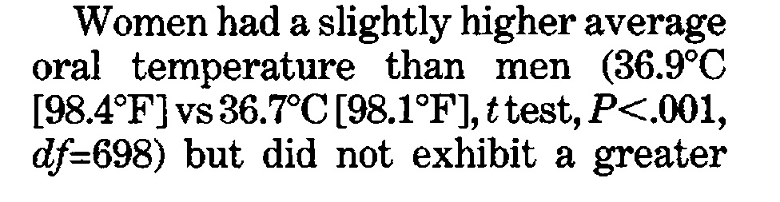
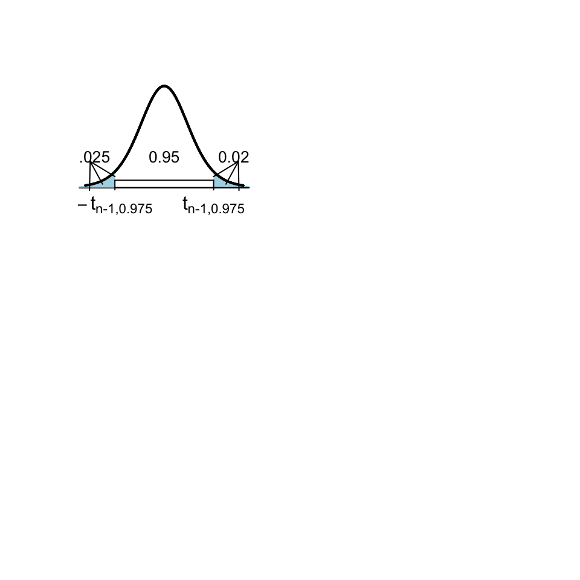
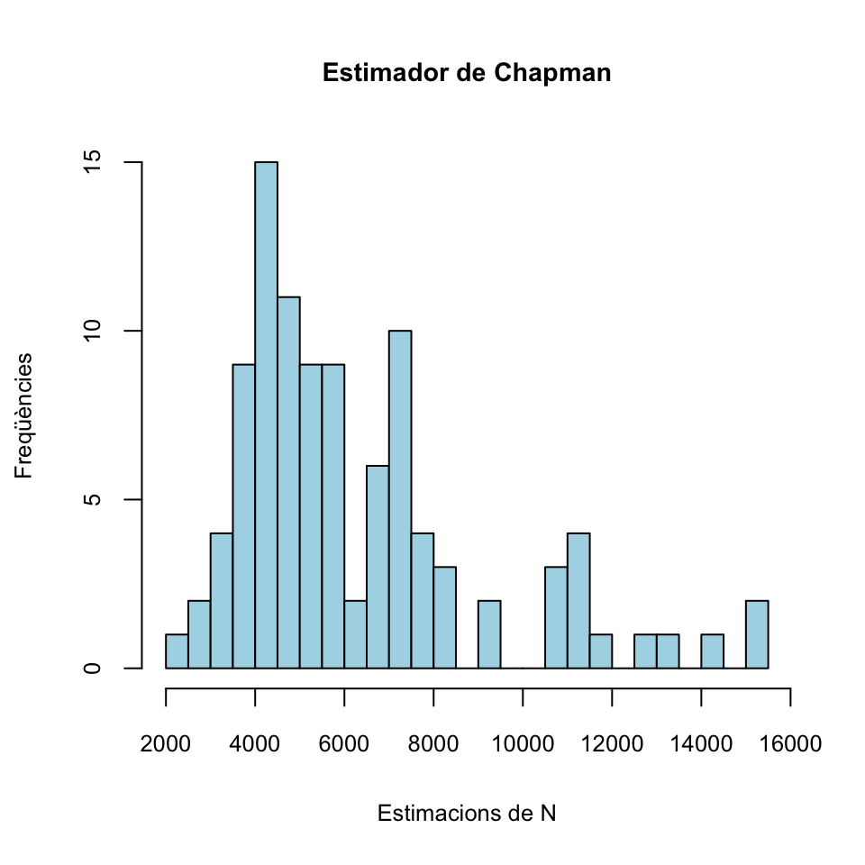
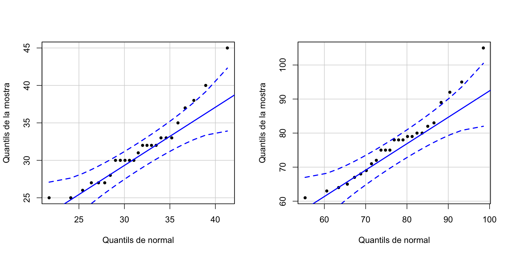
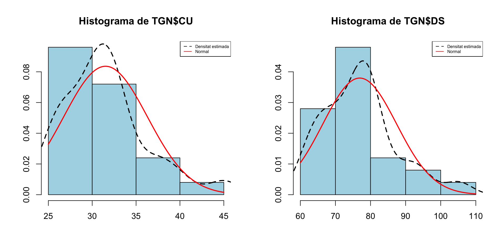
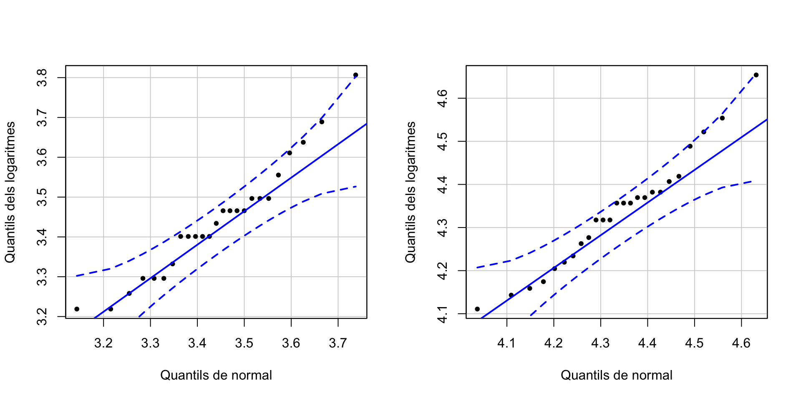
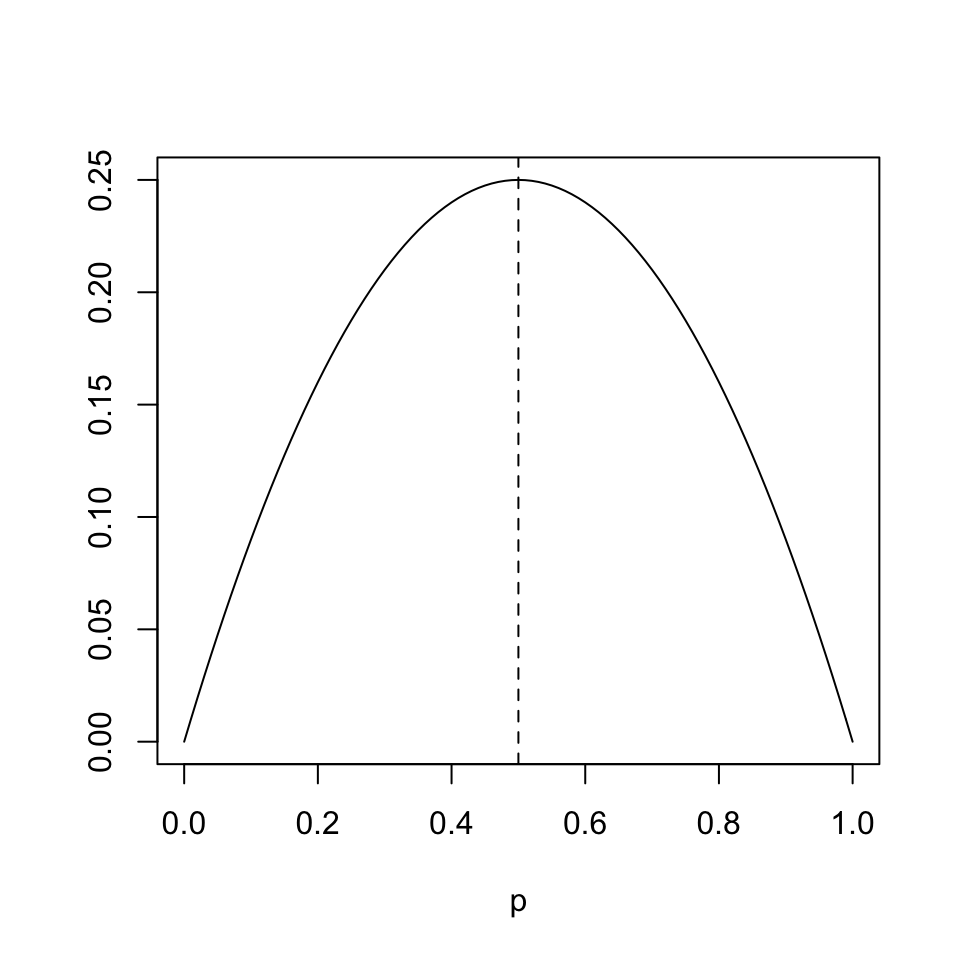
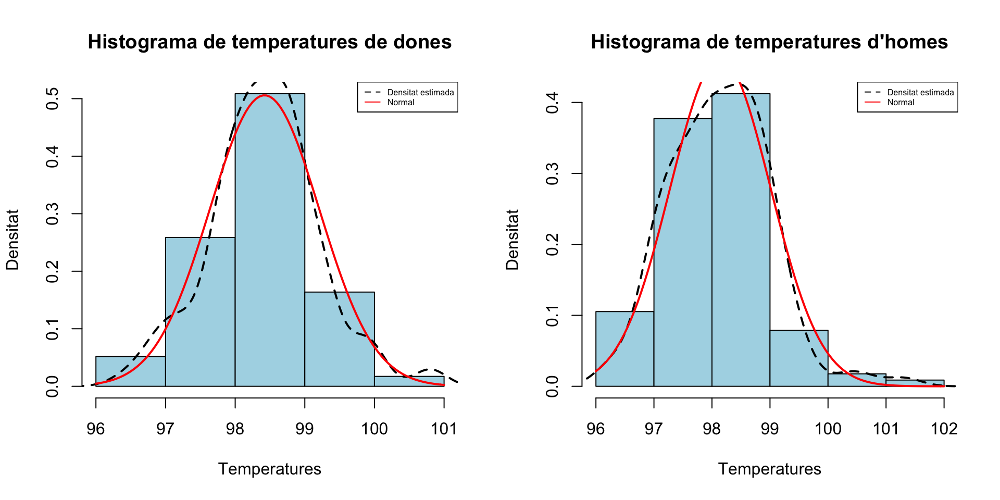
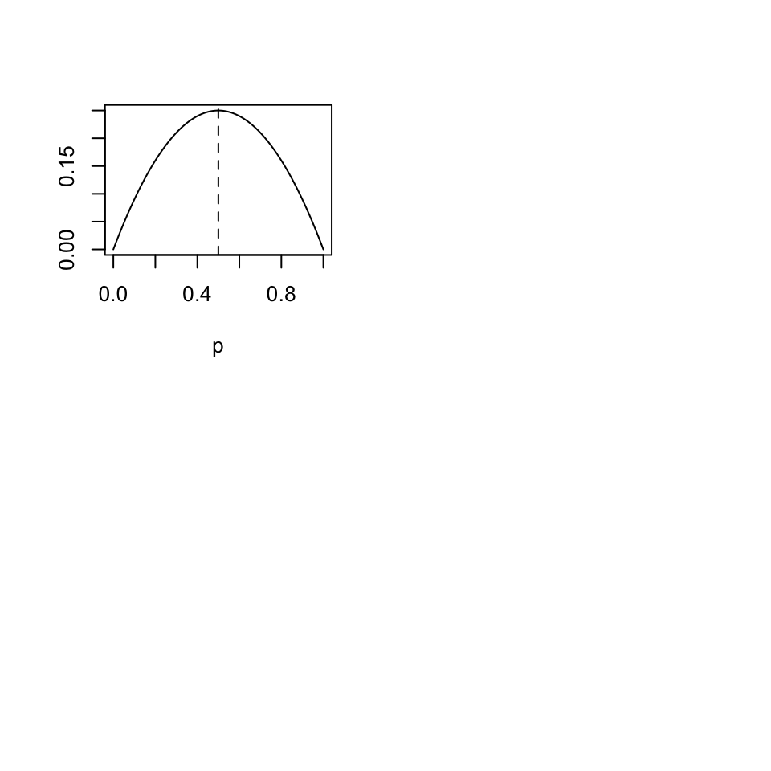

Tema 5 Contrastos d’hipòtesis d’un i dos paràmetres
Per adquirir un poc de disciplina en la realització de contrastos d’hipòtesis, procurau, almenys per ara, dividir-los en els apartats següents:
Variables aleatòries d’interès i els paràmetres poblacionals involucrats en el contrast
Contrast \[ \left\{\begin{array}{l} H_{0}: ...\\ H_{1}: ... \end{array} \right. \]
I a partir d’aquí, si el feu “a mà”:
Estadístic de contrast i distribució si la hipòtesi nul·la és vertadera
Valor de l’estadístic sobre la mostra
p-valor i si pot ser interval de confiança del nivell de significació demanat (0.05 per defecte)
Conclusió
I si el feu amb R:
L’efectuau amb R
Conclusió
Per a la conclusió, emprau la plantilla següent
Hem obtingut evidència estadísticament significativa que passa tal cosa (test realitzat, p-valor …, IC 95% …). No hem obtingut evidència estadísticament significativa que passa tal cosa (test realitzat, p-valor …, IC 95% …).
5.1 Contrastos de mitjanes
5.1.1 Test t per a una mitjana
Si estam en una de les dues situacions següents:
\(X\) una variable aleatòria normal de mitjana \(\mu\) i en prenem una mostra aleatòria simple de mida \(n\) qualsevol
\(X\) una variable aleatòria qualsevol de mitjana \(\mu\) i en prenem una mostra aleatòria simple de mida \(n\) gran (diguem que de mida com a mínim 30)
i volem realitzar un contrast \[ \left\{\begin{array}{l} H_{0}:\mu=\mu_0\\ H_{1}:\mu \neq\mu_0\text{ o }\mu >\mu_0\text{ o }\mu<\mu_0 \end{array} \right. \] podem emprar el test t que ja hem explicat a la Secció 4.5, basat en l’estadístic de contrast \[ T= \frac{\overline{X}-\mu_{0}}{{\widetilde{S}_X}/{\sqrt{n}}} \] que, en les condicions donades i si \(\mu=\mu_0\), té una distribució (aproximadament, quan \(X\) no és normal però \(n\) és gran) \(t_{n-1}\).
Exemple 5.1 Una organització ecologista afirma que el pes mitjà dels individus adults d’una espècie ha disminuït dràsticament. Se sap per les dades històriques que el pes mitjà poblacional era de 460 g.
Una mostra aleatòria de 50 individus d’aquesta espècie ha donat una mitjana mostral de 428 g i una desviació típica mostral de 119 g. Amb aquestes dades, podem afirmar amb un nivell de significació del 5% que el pes mitjà és inferior a 460 g?
Variable aleatòria d’interès: \(X\): “Prenem un animaló d’aquests i mesuram el seu pes, en grams”, de mitjana \(\mu\)
Contrast: \[ \left\{\begin{array}{l} H_{0}:\mu=460\\ H_{1}:\mu<460 \end{array} \right. \]
Prenem nivell de significació \(\alpha=0.05\).
Estadístic de contrast: Com que \(n=50\) és gran, podem usar \[ T=\frac{\overline{X}-\mu_0}{{\widetilde{S}_X}/{\sqrt{n}}} \] que sí \(H_0\) és vertadera serà (aproximadament) t de Student amb \(n-1=49\) graus de llibertat
Valor de l’estadístic: \[ \dfrac{428-460}{{119}/{\sqrt{50}}}=-1.9 \]
p-valor: \[ P(T\leqslant-1.9)=\texttt{pt(-1.9,49)}=0.032 \]
Interval de confiança del 95%: \[ \left(-\infty, \overline{X}+t_{n-1,1-\alpha}\cdot \frac{\widetilde{S}_X}{\sqrt{n}}\right]=(-\infty, 456.2] \]
Conclusió: Com que el p-valor és més petit que 0.05, concloem (amb \(\alpha=0.05\)) que el pes mitjà actual és més petit que 460 g. Amb un 95% de confiança podem afirmar que el pes mitjà actual és inferior a 456.2 g.
Amb la plantilla que us hem donat:
Hem obtingut evidència estadísticament significativa que el pes mitjà actual és menor que 460 g (test t, p-valor 0.03, IC 95% de \(-\infty\) a 456.2) i que per tant ha minvat en els darrers anys.
5.1.2 Test t per a dues mitjanes
Si estam en una de les situacions següents:
\(X_1,X_2\) dues variables aleatòries normals de mitjanes \(\mu_1\), \(\mu_2\) i en prenem mostres aleatòries simples de mides \(n_1\), \(n_2\) qualssevol
\(X_1,X_2\) dues variables aleatòries qualssevol de mitjanes \(\mu_1\), \(\mu_2\) i en prenem mostres aleatòries simples de mides \(n_1\), \(n_2\) grans (diguem que cadascuna de mida com a mínim 30)
i volem realitzar un contrast \[ \left\{\begin{array}{l} H_{0}:\mu_1=\mu_2\\ H_{1}:\mu_1 \neq\mu_2\text{ o }\mu_1 >\mu_2\text{ o }\mu_1<\mu_2 \end{array} \right. \] podem usar un test t, basat en un estadístic de contrast \(T\) adequat que segueix una llei t de Student.
L’estadístic de contrast concret i els graus de llibertat de la seva distribució t de Student depenen:
De si les dues mostres són independents (hem mesurat \(X_1\) i \(X_2\) sobre dues mostres obtingudes de manera independent una de l’altra) o aparellades (hem mesurat \(X_1\) i \(X_2\) sobre els subjectes d’una mateixa mostra o hi ha un aparellament natural entre els subjectes de les dues mostres)
Quan les mostres són independents, també depenen de si \(X_1\) i \(X_2\) tenen la mateixa variància o no (la qual cosa es pot decidir amb un altre contrast: vegeu la Secció 5.2); per a mostres de la mateixa mida de variables normals, la conclusió sol ser la mateixa
Quan les mostres són aparellades, podem entendre que tenim una sola mostra, formada per les parelles. En aquest cas, traduïm \[ \left\{\begin{array}{l} H_{0}:\mu_1=\mu_2\\ H_{1}:\mu_1 \neq\mu_2\text{ o }\mu_1 >\mu_2\text{ o }\mu_1<\mu_2 \end{array} \right. \] en \[ \left\{\begin{array}{l} H_{0}:\mu_1-\mu_2=0\\ H_{1}:\mu_1-\mu_2 \neq0\text{ o }\mu_1-\mu_2 >0\text{ o }\mu_1-\mu_2<0 \end{array} \right. \] on \(\mu_1-\mu_2\) és la mitjana de \(X_1-X_2\), i el consideram un contrast d’una sola mitjana, emprant com a mostra les diferències \(X_1-X_2\) a les parelles.
Per tant, quan les mostres són aparellades, si diem \(\overline{D}\) a la mitjana mostral de \(X_1-X_2\) i \(\widetilde{S}_D\) a la desviació típica mostral de \(X_1-X_2\) sobre la mostra de parelles i diem \(n\) a la mida de la mostra de parelles, l’estadístic de contrast és \[ T=\frac{\overline{D}}{\widetilde{S}_D/\sqrt{n}} \] que, quan \(\mu_1-\mu_2=0\), té (aproximadament, en el cas que \(X_1,X_2\) no siguin normals però la \(n\) sigui gran) distribució \(t_{n-1}\).
Quan les mostres són independents, siguin \(\overline{X}_1\) i \(\widetilde{S}^2_1\) la mitjana mostral i la variància mostral de la mostra de \(X_1\) i \(\overline{X}_2\) i \(\widetilde{S}^2_2\) la mitjana mostral i la variància mostral de la mostra de \(X_2\). Diguem, a més, \(\sigma_1^2\) i \(\sigma_2^2\) a les variàncies (poblacionals) de \(X_1\) i \(X_2\). Aleshores:
Si \(\sigma_1^2=\sigma_2^2\), l’estadístic de contrast és \[ T=\frac{\overline{X}_1-\overline{X}_2}{\sqrt{(\frac{1}{n_1}+\frac{1}{n_2})\cdot \frac{(n_1-1)\widetilde{S}_1^2+(n_2-1)\widetilde{S}_2^2}{n_1+n_2-2}}} \] que, quan \(\mu_1=\mu_2\), té distribució (aproximadament, en el cas que \(X_1,X_2\) no siguin normals però \(n_1\) i \(n_2\) siguin grans) \(t_{n_1+n_2-2}\)
Si \(\sigma_1^2\neq \sigma_2^2\), l’estadístic de contrast és \[ T=\frac{\overline{X}_1-\overline{X}_2}{\sqrt{\frac{\widetilde{S}_1^2}{n_1}+\frac{\widetilde{S}_2^2}{n_2}}} \] que, quan \(\mu_1=\mu_2\), té distribució (aproximadament, en el cas que \(X_1,X_2\) no siguin normals però \(n_1\) i \(n_2\) siguin grans) \(t_{\nu}\) amb \[ \nu=\frac{\displaystyle \left( \frac{\widetilde{S}_1^2}{n_1}+\frac{\widetilde{S}_2^2}{n_2}\right)^2} {\displaystyle \frac{1}{n_1-1}\left(\frac{\widetilde{S}_1^2}{n_1}\right)^2+\frac{1}{n_2-1}\left(\frac{\widetilde{S}_2^2}{n_2}\right)^2} \]
El nombre de graus de llibertat de la distribució t de Student usada en un contrast sobre dues mostres de mida \(n\):
Si les mostres són aparellades, és \(n-1\)
Si les mostres són independents, és aproximadament \(2(n-1)\)
Això fa que la probabilitat d’error de Tipus I del contrast amb mostres aparellades (a igualtat de la resta de valors) sigui més petita. Per exemple, suposem que volem realitzar el contrast \[ \left\{ \begin{array}{l} H_0: \mu_1=\mu_2\\ H_1: \mu_1>\mu_2 \end{array} \right. \] i que l’estadístic de contrast \(T\) sobre dues mostres de mides \(n_1=n_2=20\) dóna 1.7. Aleshores
Si les mostres són independents, \[ \text{p-valor}=P(T>1.7)\approx \texttt{1-pt(1.7,38)}=0.0487 \]
Si les mostres són aparellades, \[ \text{p-valor}=P(T>1.7)=\texttt{1-pt(1.7,19)}=0.0527 \]
Per tant, amb nivell de significació \(\alpha=0.05\), rebutjaríem la hipòtesi nul·la amb les mostres independents i l’acceptaríem amb les mostres aparellades.
5.1.3 Tests t amb R
Tots aquests tests t estan implementats en la funció de R
t.test(x, y, mu=..., alternative=..., paired=...,
var.equal=..., conf.level=...)on:
Entram com a
xuna mostra i amuel valor amb el qual volem contrastar \(\mu\), o entram com axiyles mostres de \(X_1\) i de \(X_2\)A
alternativehi hem d’indicar el tipus de contrast segons la hipòtesi alternativa:alternative="two.sided"(\(\neq\), el valor per defecte)alternative="less"(\(<\))alternative="greater"(\(>\))
En el cas d’un contrast de dues mitjanes, a
pairedhi hem d’indicar si les mostres són independents, ambpaired=FALSE(el valor per defecte), o aparellades, ambpaired=TRUEEn el cas d’un contrast de dues mitjanes amb mostres independents, a
var.equalhi hem d’indicar si les variàncies són iguals, ambvar.equal=TRUE, o diferents, ambvar.equal=FALSE(el valor per defecte)A
conf.levelhi hem d’especificar el nivell de confiança \(1-\alpha\): el seu valor per defecte és 0.95, que correspon al nivell de significació \(\alpha=0.05\) usual
5.1.4 Exemples
Exemple 5.2 La temperatura mitjana del cos humà, és el valor usualment acceptat de 98.6o F (37o C)?
Per contrastar-ho, emprarem la taula de dades Body_Temperature.txt, construïda per P.A. Mackowiak, S. S. Wasserman i M.M. Levine en 1992 precisament per realitzar aquest contrast i que trobareu a l’Aula Digital.
Variable aleatòria d’interès: \(X\): “Prenem una persona i li miram la temperatura, en graus F”, de mitjana \(\mu\)
Contrast: \[ \left\{\begin{array}{l} H_{0}:\mu=98.6\\ H_{1}:\mu \neq 98.6 \end{array} \right. \]
Realitzarem aquest contrast amb R. Carregam la taula de temperatures, que prèviament hem guardat en el directori de treball de R, en un dataframe que anomenarem BT.
BT=read.table("Body_Temperature.txt")
head(BT)## Gender HeartRate Temperature
## 1 M 69 97.0
## 2 M 72 98.8
## 3 M 68 96.2
## 4 F 75 97.8
## 5 F 68 98.8
## 6 M 79 101.3str(BT)## 'data.frame': 230 obs. of 3 variables:
## $ Gender : Factor w/ 2 levels "F","M": 2 2 2 1 1 2 1 1 1 2 ...
## $ HeartRate : int 69 72 68 75 68 79 71 73 77 81 ...
## $ Temperature: num 97 98.8 96.2 97.8 98.8 ...Veiem que la taula BT consta de 230 individus i 3 variables mesurades sobre cadascun d’ells: el sexe (variable Gender, amb valors F per a dona i M per a home), les pulsacions per minut (variable HeartRate) i la temperatura en graus F (variable Temperature).
Com que la mostra és gran, \(n=230\), podem emprar un test t. Emprarem la funció t.test, aplicant-la al vector de temperatures i al valor que contrastam, 98.6, entrat amb el parametre mu. El paràmetre alternative="two.sided" indica que el test serà bilateral.
t.test(BT$Temperature, mu=98.6, alternative="two.sided")##
## One Sample t-test
##
## data: BT$Temperature
## t = -5.7205, df = 229, p-value = 3.301e-08
## alternative hypothesis: true mean is not equal to 98.6
## 95 percent confidence interval:
## 98.17563 98.39307
## sample estimates:
## mean of x
## 98.28435Del resultat cal destacar:
El p-valor,
p-value, en el nostre cas \(3.301\times 10^{-8}\) (R l’ha escrit en notació científica: 3.301e-08).L’IC 95%,
95 percent confidence interval, per al valor que contrastam (aquí, la temperatura mitjana poblacional), en el nostre cas [98.17563, 98.39307].La mitjana mostral de la mostra,
sample of x, en el nostre cas 98.28435.
Per tant:
El p-valor és \(3\times 10^{-8}\), per la qual cosa obtenim evidència estadísticament significativa que la temperatura mitjana del cos humà no és de 98.6o F (37o C)
A més, com que l’IC 95% per a la temperatura mitjana del cos humà que hem obtingut va de 98.2 a 98.4 (36.78 a 36.89o C), hem trobat evidència amb aquest nivell de confiança que aquesta temperatura mitjana és (lleugerament) inferior 98.6o F
Conclusió: Hem obtingut evidència estadísticament significativa que la temperatura mitjana del cos humà no és de 98.6o F (test t, p-valor 3·10-8, IC 95% de 98.2 a 98.4).
Exemple 5.3 La temperatura dels homes, és més alta que la de les dones?
Per resoldre aquesta qüestió, emprarem la mateixa taula de dades que abans.
Variables aleatòries d’interès:
- \(X_d\): “Prenem una dona i li miram la temperatura, en graus F”, de mitjana \(\mu_d\)
- \(X_h\): “Prenem un home i li miram la temperatura, en graus F”, de mitjana \(\mu_h\)
Contrast: Plantejarem el contrast en termes de temperatures mitjanes: \[ \left\{\begin{array}{l} H_{0}:\mu_d=\mu_h\\ H_{1}:\mu_d< \mu_h \end{array} \right. \]
Per poder emprar un t test, primer ens cal saber si hi ha nombres suficientment grans d’homes i dones a la nostra mostra per emprar-lo. Per això calcularem la taula de freqüències dels sexes, aplicant la funció table al vector BT$Gender dels sexes:
table(BT$Gender)##
## F M
## 116 114Són prou grans.
Anam a crear uns vectors amb les temperatures d’homes i de dones. Recordau que per extreure d’un dataframe el vector de valors d’una variable V1 per als individus que prenen un valor concret X en una altra variable V2 s’empra la construcció dataframe[V2==X,V1]. Així, les temperatures dels homes (individus on la variable Gender és igual a M) són
BT[BT$Gender=="M","Temperature"]## [1] 97.0 98.8 96.2 101.3 99.2 97.5 97.3 98.6 99.0 98.0 97.0
## [12] 97.6 99.0 97.1 98.9 98.6 98.9 97.2 98.0 99.4 98.8 98.5
## [23] 99.6 97.3 96.5 97.8 98.3 98.1 98.8 97.7 98.3 97.7 99.1
## [34] 98.8 97.4 96.9 98.0 98.4 100.3 97.0 99.0 100.6 98.0 98.5
## [45] 97.0 97.0 98.6 97.8 97.3 96.3 96.7 96.9 97.0 97.1 97.1
## [56] 97.1 97.2 97.3 97.4 97.4 97.4 97.4 97.5 97.5 97.6 97.6
## [67] 97.6 97.7 97.8 97.8 97.8 97.8 97.9 97.9 98.0 98.0 98.0
## [78] 98.0 98.0 98.0 98.1 98.1 98.2 98.2 98.2 98.2 98.3 98.3
## [89] 98.4 98.4 98.4 98.4 98.5 98.5 98.6 98.6 98.6 98.6 98.6
## [100] 98.6 98.7 98.7 98.8 98.8 98.8 98.9 99.0 99.0 99.0 99.1
## [111] 99.2 99.3 99.4 99.5Bé, cream els vectors \(X_d\) (dones) i \(X_h\) (homes)
X_d=BT[BT$Gender=="F","Temperature"] #temperatures de dones
X_h=BT[BT$Gender=="M","Temperature"] #temperatures d'homesPer portar a terme un test t per comparar dues mitjanes, aplicam la funció t.test als vectors X_di X_h amb paràmetre alternative="less" per indicar que el test és unilateral: la hipòtesi alternativa és que la mitjana de la primera població (dones) és més petita que la de la segona (homes). En aquest exemple, a més, especificarem que les mostres són independents amb paired=FALSE (no caldria, ja que és el valor per defecte) i a més hem d’especificar si les variàncies poblacionals són iguals (var.equal=TRUE) o diferents (var.equal=FALSE). El que farem aquí serà provar els dos casos: amb les variàncies iguals i amb les variàncies diferents. Si les dues conclusions són la mateixa, aquesta serà la conclusió que prendrem. Si dóna diferent, haurem de realitzar un contrast previ per decidir si podem suposar que les variàncies són iguals o diferents.
t.test(X_d, X_h, alternative="less",paired=FALSE, var.equal=TRUE)##
## Two Sample t-test
##
## data: X_d and X_h
## t = 2.5379, df = 228, p-value = 0.9941
## alternative hypothesis: true difference in means is less than 0
## 95 percent confidence interval:
## -Inf 0.4569566
## sample estimates:
## mean of x mean of y
## 98.42155 98.14474t.test(X_d, X_h, alternative="less",paired=FALSE, var.equal=FALSE)##
## Welch Two Sample t-test
##
## data: X_d and X_h
## t = 2.5358, df = 225.32, p-value = 0.9941
## alternative hypothesis: true difference in means is less than 0
## 95 percent confidence interval:
## -Inf 0.4571095
## sample estimates:
## mean of x mean of y
## 98.42155 98.14474En tots dos casos obtenim un p-valor (p-value) gran. L’IC 95 % (95 percent confidence interval) que ens dóna és per a la diferència de les mitjanes. Com que conté el 0, no podem descartar que les dues mitjanes siguin iguals.
Conclusió: No hem obtingut evidència estadísticament significativa que la temperatura mitjana de les dones sigui més baixa que la dels homes (test t, p-valor 0.99, IC 95% per a la diferència de les mitjanes de \(-\infty\) a 0.46).
Exercici: Emprant les mateixes dades, trobau evidència que \(\mu_h<\mu_d\)? I que \(\mu_h\neq \mu_d\)? Spoiler:

Exemple 5.4 Desdijunar segó de civada (oat bran) en lloc de flocs de blat de moro (corn flakes), ajuda a reduir el nivell de colesterol?
Per resoldre aquesta qüestió, emprarem la taula de dades oatbran.txt, que trobareu a l’Aula Digital. Aquestes dades es recolliren en un assaig creuat sobre 14 individus. A cada un d’ells se li assignà un dels dos desdijunis i el prengueren durant 15 dies. Al final d’aquest període, se’ls mesurà el nivell de colesterol en sang. Passat un mes de descans, cada participant va desdijunar durant 15 dies l’altre producte, i al final se’ls tornà a mesurar el nivell de colesterol en sang.
Variables aleatòries d’interès:
- \(X_{ob}\): “Prenem una persona que desdijuna oat bran i li mesuram el nivell de colesterol”, de mitjana \(\mu_{ob}\)
- \(X_{cf}\): “Prenem una persona que desdijuna corn flakes i li mesuram el nivell de colesterol”, de mitjana \(\mu_{cf}\)
Contrast: El plantejarem en termes de nivells mitjans de colesterol: \[ \left\{\begin{array}{l} H_{0}:\mu_{ob}=\mu_{cf}\\ H_{1}:\mu_{ob}< \mu_{cf} \end{array} \right. \]
Carregam la taula de dades, que prèviament hem guardat en el directori de treball de R, en un dataframe al que anomenam OBR i consultam la seva estructura:
OBR=read.table("oatbran.txt",header=TRUE)
head(OBR)## CORNFLK OATBRAN
## 1 4.61 3.94
## 2 6.42 5.57
## 3 5.40 5.85
## 4 4.54 4.80
## 5 3.98 3.68
## 6 3.82 2.96str(OBR)## 'data.frame': 14 obs. of 2 variables:
## $ CORNFLK: num 4.61 6.42 5.4 4.54 3.98 3.82 5.01 4.34 3.8 4.56 ...
## $ OATBRAN: num 3.94 5.57 5.85 4.8 3.68 2.96 4.41 3.72 3.49 3.94 ...N’extraiem les dues variables en forma de vectors:
OAT=OBR$OATBRAN
CFL=OBR$CORNFLKCom que 14 dades són poques, si volem aplicar un test t necessitam que provinguin d’una distribució normal. Per decidir si és veritat o no, més endavant explicarem contrastos de bondat d’ajust, amb hipòtesi nul·la “Aquesta mostra prové d’una variable aleatòria amb tal distribució” i hipòtesi alternativa “No és veritat que aquesta mostra provengui d’una variable aleatòria amb tal distribució”. Per ara ens conformarem amb decidir-ho a partir d’un gràfic.
A Matemàtiques I us explicàvem que podeu dibuixar un histograma d’una mostra afegint-hi la densitat estimada, a partir de la mostra, de la variable poblacional i la densitat d’una distribució normal de mitjana i desviació típica les de la mostra, i mirar si sembla que les dades segueixen aquesta distribució normal. Però amb poques dades això és mal de veure:
hist(OAT,freq=FALSE, breaks=4,col="light blue",xlab="Colesterol",
ylab="Densitat", main="Histograma de OATBRAN")
lines(density(OAT),lty=2,lwd=2)
curve(dnorm(x,mean(OAT),sd(OAT)),col="red",lwd=2,add=TRUE)
legend("topright",legend=c("Densitat estimada","Normal"),
col=c("black","red"),lty=c(2,1),cex=0.5)
#
hist(CFL,freq=FALSE, breaks=4,col="light blue",xlab="Colesterol",
ylab="Densitat", main="Histograma de CORNFLK",ylim=c(0,0.5))
curve(dnorm(x,mean(CFL),sd(CFL)),col="red",lwd=2,add=TRUE)
lines(density(CFL),lty=2,lwd=2)
legend("topright",legend=c("Densitat estimada","Normal"),
col=c("black","red"),lty=c(2,1),cex=0.5)
En aquest cas, una opció millor és dibuixar un q-q-plot. Un q-q-plot d’una mostra i una distribució teòrica és el gràfic dels q-q-punts: els punts de la forma (q-quantil de la distribució, q-quantil de la mostra), per a tots els valors de q que tengui sentit donada la mida de la mostra. Quan la distribució amb la que comparam la mostra és una normal, se’n diu un normal-plot.
Si la mostra prové de la distribució emprada en el q-q-plot, és d’esperar que el q-quantil de la mostra sigui aproximadament igual al q-quantil de la distribució i per tant que aquests q-q-punts estiguin prop de la diagonal principal \(y=x\).
La funció qqPlot del paquet car produeix uns q-q-plots que contenen una regió de confiança del 95% que especifica què vol dir això que “els q-q-punts estiguin prop de la diagonal principal \(y=x\)”, amb el significat usual de nivell de confiança. L’explicam amb detall a la lliçó de R sobre contrastos de bondat d’ajust.
library(car)
qqPlot(OAT, distribution="norm", mean=mean(OAT), sd=sd(OAT),
ylab="Quantils de OATBRAN", xlab="Quantils de normal", pch=20, id=FALSE)
qqPlot(CFL, distribution="norm", mean=mean(CFL),sd=sd(CFL),
ylab="Quantils de CORNFLK", xlab="Quantils de normal", pch=20, id=FALSE)
Aceptarem per tant que les nostres dades provenen de dues distribucions normals: podem fer servir la funció t.test.
En aquest cas, el test t és de mostres aparellades (hem mesurat les dues variable aleatòries sobre els mateixos individus), per la qual cosa hem d’especificar paired=TRUE i no hem d’especificar el paràmetre var.equal. Emprarem el paràmetre alternative="less" per indicar que el test és unilateral: la mitjana de la primera població és més petita que la de la segona.
t.test(OAT,CFL,alternative="less", paired=TRUE)##
## Paired t-test
##
## data: OAT and CFL
## t = -3.3195, df = 13, p-value = 0.002768
## alternative hypothesis: true difference in means is less than 0
## 95 percent confidence interval:
## -Inf -0.1626132
## sample estimates:
## mean of the differences
## -0.3485714Com abans, el resultat inclou el p-valor, l’IC 95% per a la mitjana de les diferències (que és igual a la diferència de les mitjanes: recordau que \(E(X-Y)=E(X)-E(Y)\)) i ara, com a novetat, la mitjana de les diferències (mean of the differences) en comptes de les dues mitjanes.
Conclusió: Hem obtingut evidència estadísticament significativa que desdijunar oatbran redueix el nivell mitjà de colesterol respecte de desdijunar corn flakes (test t, p-valor 0.003, IC 95% per a la diferència de les mitjanes de \(-\infty\) a -0.163).
Exemple 5.5 Volem contrastar si el nivell de triglicèrids als nadons de 2 setmanes és més alt que el del seu cordó umbilical. Per fer-ho, emprarem les dades d’una mostra de 25 nadons als quals els mesuraren els nivells de triglicèrids en plasma a la sang del seu cordó umbilical i en la seva sang al cap de 2 setmanes de néixer. Tenim les dades a la taula trignadons.txt que trobareu a l’Aula Digital. Les seves variables són CU, les mesures del cordó umbilical, DS, les mesures al cap de dues setmanes, i Nin, que identifica el nadó.
Variables aleatòries d’interès:
- \(X_{cu}\): “Prenem un recent nat i mesuram el nivell de triglicèrids en plasma a la sang del seu cordó umbilical”, de mitjana \(\mu_{cu}\)
- \(X_{ds}\): “Prenem un nadó de 2 setmanes i mesuram el seu nivell de triglicèrids en plasma”, de mitjana \(\mu_{cf}\)
Contrast: Plantejarem el contrast en termes dels nivells mitjans de triglicèrids: \[ \left\{\begin{array}{l} H_{0}:\mu_{cu}=\mu_{ds}\\ H_{1}:\mu_{cu}< \mu_{ds} \end{array} \right. \]
Carregam la taula de dades, que prèviament hem guardat en el directori de treball de R, en un dataframe al que anomenam TGN i consultam la seva estructura:
TGN=read.table("trignadons.txt",header=TRUE)
head(TGN)## Child CU DS
## 1 1 45 80
## 2 2 30 68
## 3 3 30 83
## 4 4 30 78
## 5 5 31 79
## 6 6 27 78str(TGN)## 'data.frame': 25 obs. of 3 variables:
## $ Child: int 1 2 3 4 5 6 7 8 9 10 ...
## $ CU : int 45 30 30 30 31 27 27 30 33 32 ...
## $ DS : int 80 68 83 78 79 78 89 78 72 75 ...Com que 25 dades són poques, miram si segueixen distribucions normals amb els seus normal-plots:
qqPlot(TGN$CU, distribution="norm", mean=mean(TGN$CU), sd=sd(TGN$CU),
ylab="Quantils de la mostra", xlab="Quantils de normal",
pch=20, id=FALSE)
qqPlot(TGN$DS, distribution="norm", mean=mean(TGN$DS), sd=sd(TGN$DS),
ylab="Quantils de la mostra", xlab="Quantils de normal",
pch=20,id=FALSE)
Vaja, no sembla que segueixin una distribució normal. Vegem els seus histogrames
hist(TGN$CU, freq=FALSE, main="Histograma de TGN$CU",
xlab="",ylab="",col="light blue")
lines(density(TGN$CU),lty=2,lwd=2)
curve(dnorm(x,mean(TGN$CU),sd(TGN$CU)),col="red",lwd=2,add=TRUE)
legend("topright",legend=c("Densitat estimada","Normal"),col=c("black","red"),
lty=c(2,1),cex=0.5)
#
hist(TGN$DS, freq=FALSE, main="Histograma de TGN$DS",
xlab="",ylab="",col="light blue")
lines(density(TGN$DS),lty=2,lwd=2)
curve(dnorm(x,mean(TGN$DS),sd(TGN$DS)),col="red",lwd=2,add=TRUE)
legend("topright",legend=c("Densitat estimada","Normal"),col=c("black","red"),
lty=c(2,1),cex=0.5)
Les dues mostres presenten una cua a la dreta. En casos així, de vegades els logaritmes seguexen aproximadament una distribució normal. Vegem si hi ha sort.
LogCU=log(TGN$CU)
qqPlot(LogCU, distribution="norm", mean=mean(LogCU), sd=sd(LogCU),
ylab="Quantils dels logaritmes", xlab="Quantils de normal",
pch=20, id=FALSE)
#
LogDS=log(TGN$DS)
qqPlot(LogDS, distribution="norm", mean=mean(LogDS), sd=sd(LogCU),
ylab="Quantils dels logaritmes", xlab="Quantils de normal",
pch=20, id=FALSE)
Aquests logaritmes ja poden passar per normals. Per tant, el que farem serà, en lloc de comparar les mitjanes dels nivells de triglicèrids, comparar les mitjanes dels seus logaritmes.
No són contrastos equivalents, perquè el logaritme de la mitjana no és la mitjana del logaritme. Però en realitat la pregunta que originava aquesta investigació era si el nivell de triglicèrids augmenta en les dues primeres setmanes de vida dels nadons, i ho plantejàvem en termes de si és veritat que el nivell mitjà de triglicèrids augmenta en les dues primeres setmanes de vida dels nadons.
Ara, demanar-nos si “el nivell de triglicèrids augmenta en les dues primeres setmanes de vida dels nadons” sí que és equivalent a demanar-nos si “el logaritme del nivell de triglicèrids augmenta en les dues primeres setmanes de vida dels nadons”. I el que fem és plantejar aquesta pregunta en termes de si és veritat que el valor mitjà del logaritme del nivell de triglicèrids augmenta en les dues primeres setmanes de vida dels nadonsNoves variables aleatòries d’interès:
- \(\log(X_{cu})\): “Prenem un recent nat i calculam el logaritme del nivell de triglicèrids en plasma a la sang del seu cordó umbilical”, de mitjana \(\mu_{logcu}\)
- \(\log(X_{ds})\): “Prenem un nadó de 2 setmanes i calculam el logaritme del seu nivell de triglicèrids en plasma”, de mitjana \(\mu_{logcf}\)
Nou contrast: \[ \left\{\begin{array}{l} H_{0}:\mu_{logcu}=\mu_{logds}\\ H_{1}:\mu_{logcu}< \mu_{logds} \end{array} \right. \]
Prenem com a mostres de \(\log(X_{cu})\) i \(\log(X_{ds})\) els vectors de logaritmes LogCU i LogDS de la nostra mostra original, que podem acceptar que provenen de distribucions normals, i els aplicam la funció t.test amb paired=TRUE, perquè són mostres aparellades, i alternative="less".
t.test(LogCU, LogDS, paired=TRUE, alternative="less")##
## Paired t-test
##
## data: LogCU and LogDS
## t = -26.112, df = 24, p-value < 2.2e-16
## alternative hypothesis: true difference in means is less than 0
## 95 percent confidence interval:
## -Inf -0.8353074
## sample estimates:
## mean of the differences
## -0.8938758Conclusió: Hem obtingut evidència estadísticament significativa que el valor mitjà del logaritme del nivell de triglicèrids a la sang del cordó umbilical d’un nadó és més petit que el valor mitjà del logaritme del nivell de triglicèrids a la sang d’un nadó de 2 setmanes (test t, p-valor<10-16, IC 95% per a la diferència de les mitjanes de \(-\infty\) a -0.84). Concloem, per tant, que tenim evidència estadísticament significativa que el nivell de triglicèrids als nadons de 2 setmanes és més alt que el del seu cordó umbilical.
5.1.5 Tests no paramètrics
Si les variables aleatòries d’interès no són (aproximadament) normals i alguna mostra és petita, no podem usar un test t per comparar mitjanes. En aquest cas, una possibilitat és provar de transformar les dades com a l’Exemple 5.5 per veure si la transformació esdevé normal, i si és el cas, plantejar el contrast en termes de mitjanes de logaritmes.
Una altra possibilitat és emprar un test no paramètric, que no necessiti que les variables aleatòries siguin normals per que la conclusió sigui vàlida.
La majoria de tests no paramètrics per comparar mitjanes en realitat comparen medianes, però normalment cometem l’abús de llenguatge de dir que són per contrastar mitjanes. A més, si les variables aleatòries són simètriques, les mitjanes coincideixen amb les medianes.
Els més populars són:
Test de Wilcoxon per a una mitjana o dues mitjanes usant mostres aparellades
Test de Mann-Whitney per a dues mitjanes usant mostres independents
Tots tres es calculen amb R amb la funció
wilcox.test(x, y, mu=..., alternative=...,
paired=..., conf.level=...)amb sintaxi idèntica a la de t.test (excepte que no s’hi empra el var.equal).
Els millors tests no paramètrics solen tenir potència inferior als millors tests paramètrics. A més, els tests no paramètrics no solen produir intervals de confiança fiables. Però, per exemple, emprar un test t quan no és adequat pot portar a conclusions equivocades.
Emprau tests paramètrics sempre que pogueu, però només quan pogueu.Com a exemple, vegem com funciona (una versió simplificada) del test de Wilcoxon d’una mitjana. Sigui \(X\) una variable aleatòria contínua simètrica al voltant de la seva mitjana \(\mu\) desconeguda. Volem realitzar un contrast \[ \left\{\begin{array}{l} H_{0}:\mu=\mu_0\\ H_{1}:\mu \neq \mu_0 \text{ o }\mu >\mu_0\text{ o }\mu<\mu_0 \end{array} \right. \]
Prenem una mostra aleatòria simple \(x_1,\ldots, x_n\) de \(X\). El procediment d’aquest test es basa aleshores en els següents passos, que després il·lustram a l’Exemple 5.6:
Per a cada \(i=1,\ldots,n\), sigui \(d_i=x_i-\mu_0\); s’eliminen els valors 0
Enumeram els valors \(d_i\) de menor a major valor absolut; en cas d’empats, a cada un li assignam la mitjana de les posicions que ocuparien. A l’índex assignat d’aquesta manera a cada \(d_i\) li diem el seu rang. Per exemple, a l’Exemple 5.6 hi ha quatre \(i\) amb valors \(d_i=\pm 1\), i els tocarien les posicions 1, 2, 3 i 4: aleshores el rang de cada un d’aquests quatre \(d_i\) és 2.5.
Diem \(T_+\) a la suma dels rangs dels \(d_i>0\) i \(T_{-}\) a la suma dels rangs dels \(d_i<0\)
Si \(H_0\) vertadera, és a dir, si \(\mu=\mu_0\), per la simetria de \(X\) al voltant de \(\mu\) esperam que \(T_+\approx T_-\). Per tant:
Si \(T_+\) és molt petit, és evidència que \(\mu <\mu_0\)
En efecte, si \(T_+\) és molt més petit que \(T_-\), bàsicament significa que hi ha més valors a l’esquerra de \(\mu_0\) que a la dreta, i per tant la mediana (és a dir, el valor que deixa la meitat dels valors a l’esquerra i l’altra meitat a la dreta) ha d’estar a l’esquerra de \(\mu_0\).
Si \(T_+\) és molt gran, és evidència que \(\mu >\mu_0\)
En efecte, si \(T_+\) és molt més gran que \(T_-\), bàsicament significa que hi ha més valors a la dreta de \(\mu_0\) que a l’esquerra, i per tant la mediana ha d’estar a la dreta de \(\mu_0\).
Si \(T_+\) és molt petit o gran, és evidència que \(\mu\neq \mu_0\)
I resulta que, quan \(X\) és simètrica i \(H_0\) vertadera, la distribució de \(T_+\), per a cada \(n\), és coneguda, i es pot emprar per calcular el p-valor, que és el que fa la funció
wilcox.test.
Exemple 5.6 Alimentàrem amb una dieta especial 13 ratolins des del naixement fins a la setmana 12. Els augments de pes (en grams) varen ser els del vector següent
pesos=c(69,61,69,65,70,68,69,68,72,67,74,69,76)Podem conclure que l’augment mitjà de pes en aquestes condicions és de menys de 70 g?
Variable aleatòria d’interès: \(X\): “Prenem un ratolí alimentat amb aquesta dieta especial i mesuram el seu augment de pes durant les seves primeres 12 setmanes de vida”, de mitjana \(\mu\).
Contrast: \[ \left\{\begin{array}{l} H_{0}:\mu=70\\ H_{1}:\mu <70 \end{array} \right. \]
Si miram la mostra, veurem que no té pinta de venir d’una distribució normal però sí simètrica:
qqPlot(pesos, distribution="norm", mean=mean(pesos), sd=sd(pesos),
ylab="Quantils de la mostra", xlab="Quantils de normal", pch=20, id=FALSE)
boxplot(pesos)
Per tant, emprarem un test de Wilcoxon. Vegem com aniria a mà.
- Calculam els \(d_i=x_i-70\)
\[ \begin{array}{l|cccccccccccccc} \hline x_i & 69 & 61 & 69 & 65 & 70 & 68 & 69 & 68 & 72 & 67 & 74 & 69 & 76\\ d_i & -1 & -9 & -1 & -5 & 0 & -2 & -1 & -2 & 2 & -3 & 4 & -1 & 6\\ \hline \end{array} \]
- Assignam índexos als \(d_i\neq 0\) en ordre creixent al seu valor absolut. En cas d’empat, per ara els assignam els índexos ordenats d’esquerra a dreta.
\[ \begin{array}{l|cccccccccccccc} \hline x_i & 69 & 61 & 69 & 65 & 70 & 68 & 69 & 68 & 72 & 67 & 74 & 69 & 76\\ d_i & -1 & -9 & -1 & -5 & 0 & -2 & -1 & -2 & 2 & -3 & 4 & -1 & 6\\ \textrm{Rang fals} & 1 & 12 & 2 & 10 & & 5 & 3 & 6 & 7 & 8 & 9 & 4 & 11 \\ \hline \end{array} \] A continuació, assignam com a “rang vertader” de cada \(d_i\) la mitjana de tots els “rangs falsos” dels \(d_i\) amb el seu mateix valor absolut. Així, el rang de tots els \(d_i=-1\) és \((1+2+3+4)/4=2.5\) i el rang dels \(d_i=-2\) o 2 és \((5+6+7)/3=6\).
\[ \begin{array}{l|cccccccccccccc} \hline x_i & 69 & 61 & 69 & 65 & 70 & 68 & 69 & 68 & 72 & 67 & 74 & 69 & 76\\ d_i & -1 & -9 & -1 & -5 & 0 & -2 & -1 & -2 & 2 & -3 & 4 & -1 & 6\\ \textrm{Rang fals} & 1 & 12 & 2 & 10 & & 5 & 3 & 6 & 7 & 8 & 9 & 4 & 11 \\ \textrm{Rang} & 2.5 & 12 & 2.5 & 10 & & 6 & 2.5 & 6 & 6 & 8 & 9 & 2.5 & 11 \\ \hline \end{array} \]
- Anotam quins \(d_i\) són positius i quins negatius:
\[ \begin{array}{l|cccccccccccccc} \hline x_i & 69 & 61 & 69 & 65 & 70 & 68 & 69 & 68 & 72 & 67 & 74 & 69 & 76\\ d_i & -1 & -9 & -1 & -5 & 0 & -2 & -1 & -2 & 2 & -3 & 4 & -1 & 6\\ \textrm{Rang fals} & 1 & 12 & 2 & 10 & & 5 & 3 & 6 & 7 & 8 & 9 & 4 & 11 \\ \textrm{Rang} & 2.5 & 12 & 2.5 & 10 & & 6 & 2.5 & 6 & 6 & 8 & 9 & 2.5 & 11 \\ \textrm{Signe} & - & - & - & - & & - & - & - & + & - & + & - & +\\ \hline \end{array} \]
Sumam, d’una banda, els rangs dels \(d_i\) positius i de l’altra, els dels negatius: \[ \begin{array}{l} T_+=6+9+11=26\\ T_-=2.5+ 12 + 2.5 + 10 + 6 + 2.5 + 6 + 8 + 2.5=52 \end{array} \]
I ara miraríem si \(T_+\) és prou més petit que \(T_-\) per que sigui evidència estadísticament significativa de que \(\mu <\mu_0\). Això ja no ho podem fer a mà.
Amb R, simplement entraríem
wilcox.test(pesos,mu=70,alternative="less")##
## Wilcoxon signed rank test with continuity correction
##
## data: pesos
## V = 26, p-value = 0.1621
## alternative hypothesis: true location is less than 70Conclusió: No hem obtingut evidència estadísticament significativa que l’augment mitjà de pes en aquestes condicions sigui més petit que 70 g (test de Wilcoxon, p-valor 0.16).
El test de Wilcoxon per a dues mitjanes emprant mostres aparellades és bàsicament el test anterior aplicat a la diferència dels valors de les dues variables a les parelles.
Exemple 5.7 Una alternativa a la transformació logarítmica portada a terme a l’Exemple 5.5 hagués estat emprar el test de Wilcoxon per a mostres aparellades.
El contrast ara seria \[ \left\{\begin{array}{l} H_{0}:\mu_{cu}-\mu_{ds}=0\\ H_{1}:\mu_{cu}- \mu_{ds}<0 \end{array} \right. \] que clarament correspon al contrast original \[ \left\{\begin{array}{l} H_{0}:\mu_{cu}=\mu_{ds}\\ H_{1}:\mu_{cu}< \mu_{ds} \end{array} \right. \] però hem de tenir present que la hipòtesi nul·la en realitat significa que la mediana de les diferències dels nivells de triglicèrids en el cordó umbilical menys els nivells de triglicèrids al cap de dues setmanes és 0, és a dir
Si restam del nivell de triglicèrids en la sang del cordó umbilical d’un nadó el seu nivell de triglicèrids en sang al cap de dues setmanes, la meitat de les vegades obtenim un valor \(\geqslant 0\) i l’altra meitat de les vegades un valor \(\leqslant 0\),
o, equivalentment,
La meitat dels nadons tenen el nivell de triglicèrids en la sang del cordó umbilical més alt o igual que el seu nivell de triglicèrids en sang al cap de dues setmanes, i l’altra meitat tenen el nivell de triglicèrids en la sang del cordó umbilical més petit o igual que el seu nivell de triglicèrids en sang al cap de dues setmanes.
La hipòtesi alternativa que aquesta mediana és negativa. És a dir, la hipòtesi alternativa és
Si restam el nivell de triglicèrids en la sang del cordó umbilical d’un nadó menys el nivell de triglicèrids en sang al cap de dues setmanes, més de la meitat de les vegades obtendríem un valor \(<0\)
o, equivalentment,
Més de la meitat dels nadons tenen el nivell de triglicèrids en la sang del cordó umbilical més petit que el seu nivell de triglicèrids en sang al cap de dues setmanes.
wilcox.test(TGN$CU,TGN$DS,alternative="less",paired=TRUE)##
## Wilcoxon signed rank test with continuity correction
##
## data: TGN$CU and TGN$DS
## V = 0, p-value = 6.384e-06
## alternative hypothesis: true location shift is less than 0Com que el p-valor és de l’ordre de 10-6, rebutjam la hipòtesi nul·la en favor de la alternativa, i cometem l’abús de llenguatge d’expressar-ho en termes de mitjanes:
Conclusió: Hem obtingut evidència estadísticament significativa que el nivell mitjà de triglicèrids a la sang del cordó umbilical dels nadons és més petit que al cap de dues setmanes (test de Wilcoxon, p-valor 6.4·10-6).
5.2 Contrastos de variàncies
5.2.1 Test \(\chi^2\) d’una variància
Siguin \(X\) una variable aleatòria \(N(\mu,\sigma)\) i \(X_1,\ldots,X_n\) una mostra aleatòria simple de \(X\) de mida \(n\) qualsevol.
Volem realitzar un contrast \[ \left\{\begin{array}{l} H_{0}:\sigma=\sigma_0\\ H_{1}:\sigma \neq\sigma_0\text{ o }\sigma >\sigma_0\text{ o }\sigma<\sigma_0 \end{array} \right. \] o equivalentment \[ \left\{\begin{array}{l} H_{0}:\sigma^2=\sigma_0^2\\ H_{1}:\sigma^2 \neq\sigma_0^2\text{ o }\sigma^2 >\sigma_0^2\text{ o }\sigma^2<\sigma_0^2 \end{array} \right. \]
Si \(H_0\) és vertadera, sabem que l’estadístic de contrast \[ \chi^2=\frac{(n-1) \widetilde{S}_X^2}{\sigma_{0}^2} \]
té distribució \(\chi_{n-1}^2\), i aleshores ho podem emprar per calcular p-valors, regions crítiques etc. En concret, si el valor d’aquest estadístic de contrast sobre la mostra és \(\chi_0^2\), aleshores:
Si \(H_{1}:\sigma>\sigma_{0}\), el p-valor és \(P(\chi^2\geqslant\chi_0^2)\)
Si \(H_{1}:\sigma<\sigma_{0}\), el p-valor és \(P(\chi^2\leqslant\chi^2_0)\)
Si \(H_{1}:\sigma\neq \sigma_{0}\), el p-valor és \(2\text{min}\big\{P(\chi^2\geqslant\chi^2_0), P(\chi^2\leqslant\chi^2_0)\big\}\)
Exemple 5.8 Suposem que tenim una mostra aleatòria simple de \(X\) normal de mida 25, i ha donat \(\widetilde{S}_X^2=1.25\). Volem realitzar alguns contrastos amb hipòtesi nul·la \(\sigma_X^2=0.8\), i per tant tendrem \[ \chi_0^2=\frac{(25-1)\cdot 1.25}{0.8}=37.5 \]
Si volem realitzar el contrast \[ \left\{\begin{array}{l} H_{0}:\sigma_X^2=0.8 \\ H_{1}:\sigma_X^2> 0.8 \end{array} \right. \] el p-valor és \[ P(\chi^2_{24} \geqslant 37.5)=\texttt{1-pchisq(37.5,24)}=0.039 \] Amb nivell de confiança \(\alpha=0.05\) rebutjam \(H_0\) en favor de \(H_1\)
Si volem realitzar el contrast \[ \left\{\begin{array}{l} H_{0}:\sigma_X^2=0.8 \\ H_{1}:\sigma_X^2\neq 0.8 \end{array} \right. \] El p-valor és \[ \begin{array}{l} 2\min\big\{P(\chi^2_{24}\geqslant 37.5),P(\chi^2_{24}\leqslant 37.5)\big\}\\ \qquad=2\min\{\texttt{1-pchisq(37.5,24)},\texttt{pchisq(37.5,24)}\}\\ \qquad=2\min\{0.039,0.961\}= 0.078 \end{array} \] Amb nivell de confiança \(\alpha=0.05\), no podem rebutjar \(H_0\).
En resum: amb la nostra mostra trobam evidència estadísticament significativa que \(\sigma>\sigma_0\), però no trobam evidència estadísticament significativa que \(\sigma\neq \sigma_0\). No us ha de venir de nou, ja ens hi hem trobat en altres ocasions (recordau els Exemples 4.13 i 4.15): per rebutjar la hipòtesi nul·la en un contrast bilateral cal més evidència que en un contrast unilateral, perquè al contrast bilateral tenim dues fonts d’error de tipus I i al contrast unilateral només una.
Exemple 5.9 S’ha analitzat el líquid amniòtic d’una mostra aleatòria de 15 embarassades de 3er trimestre, i s’han obtingut les mesures següents de proteïnes totals (en grams per 100 ml):
amnio=c(0.69,1.04,0.39,0.37,0.64,0.73,0.69,1.04,0.83,1.01,
0.19,0.61,0.42,0.25,0.79)Podem concloure a partir d’aquestes dades, amb un nivell de significació del 5%, que la desviació típica poblacional (és a dir, la desviació típica de la quantitat de proteïna total en el líquid amniòtic de les embarassades de 3er trimestre expressada en grams per 100 ml) és diferent de 0.25?
Variable aleatòria d’interès: \(X\): “Prenem una embarassada i li mesuram la uantitat de proteïna total en …” de desviació típica \(\sigma\).
Contrast: \[ \left\{\begin{array}{l} H_{0}:\sigma=0.25 \\ H_{1}:\sigma\neq 0.25 \end{array} \right. \] amb \(\alpha=0.05\)
Per poder aplicar el test \(\chi^2\), cal que \(X\) sigui normal. Vegem-ho
qqPlot(amnio, distribution="norm", mean=mean(amnio), sd=sd(amnio),
ylab="Quantils de la mostra", xlab="Quantils de normal",
pch=20, id=FALSE)
Acceptarem que \(X\) és normal.
Estadístic de contrast: \[ \chi^2=\frac{(n-1) \widetilde{S}_X^2}{\sigma_{0}^2} \] que segueix una llei \(\chi^2_{n-1}\) si \(H_0\) és certa.
Valor de l’estadístic de contrast, \(\chi^2_0\):
n=length(amnio)
khi0=(n-1)*var(amnio)/0.25^2
round(khi0,2)## [1] 17.08p-valor: \[ \begin{array}{l} 2\min\big\{P(\chi_{n-1}^2\geqslant\chi^2_0), P(\chi_{n-1}^2\leqslant\chi^2_0)\big\}\\ \qquad=2\min\{\texttt{1-pchisq(17.08,14)},\texttt{pchisq(17.08,14)}\}\\ \qquad=2\min\{0.252,0.748\}= 0.504 \end{array} \]
En aquest exemple, com que el contrast és bilateral, l’IC 95% seria el del tema anterior (amb \(q=1-\alpha=0.95\)). El de la variància seria \[ \begin{array}{l} \displaystyle \left[ \frac{(n-1)\widetilde{S}_{X}^2}{\chi_{n-1,0.975}^2}, \frac{(n-1)\widetilde{S}_{X}^2}{\chi_{n-1,0.025}^2} \right]\\ \qquad\displaystyle=\left[ \frac{14\cdot 0.0762}{26.1189}, \frac{14\cdot 0.0762}{5.6287}\right]=[0.0408, 0.1895] \end{array} \]
L’interval de confiança del 95% per a la desviació típica serà aleshores \[ [\sqrt{0.0408}, \sqrt{0.1895}]= [0.202,0.435] \] i conté el valor 0.25 que contrastàvem.
Conclusió: No hem obtingut evidència estadísticament significativa que la desviació típica (de la quantitat de proteïna total …) sigui diferent de 0.25 (test \(\chi^2\), p-valor 0.504, IC 95% de 0.202 a 0.435).
Aquest test \(\chi^2\) d’una variància està implementat en la funció sigma.test del paquet TeachingDemos. La seva sintaxi és similar a la de t.test. Per exemple, per realitzar aquest darrer contrast, simplement entraríem
library(TeachingDemos)
sigma.test(amnio,sigma=0.25,alternative="two.sided")##
## One sample Chi-squared test for variance
##
## data: amnio
## X-squared = 17.078, df = 14, p-value = 0.5041
## alternative hypothesis: true variance is not equal to 0.0625
## 95 percent confidence interval:
## 0.04086535 0.18962728
## sample estimates:
## var of amnio
## 0.07624Ups, què ha passat amb l’interval de confiança? No res: fixau-vos que és el de la variància.
sigma.test és el de la variància, tant si contrastam la desviació típica (amb el paràmetre sigma) com si contrastam la variància (amb el paràmetre sigmasq).
5.2.2 Test F per a dues variàncies
Siguin \(X_1,X_2\) dues variables aleatòries normals de desviacions típiques \(\sigma_1\) i \(\sigma_2\), respectivament. En prenem dues mostres aleatòries simples independents de mides \(n_1\) i \(n_2\) i variàncies mostrals \(\widetilde{S}^2_1\) i \(\widetilde{S}^2_2\).
Volem realitzar un contrast \[ \left\{\begin{array}{l} H_{0}:\sigma_1^2=\sigma_2^2\\[1ex] H_{1}:\sigma_1^2\neq \sigma_2^2\text{ o }\sigma_1^2> \sigma_2^2\text{ o }\sigma_1^2< \sigma_2^2 \end{array} \right. \]
L’interpretarem \[ \left\{\begin{array}{l} H_{0}:\sigma_1^2/\sigma_2^2=1\\[1ex] H_{1}:\sigma_1^2/\sigma_2^2\neq 1\text{ o }\sigma_1^2/\sigma_2^2>1 \text{ o }\sigma_1^2/\sigma_2^2< 1 \end{array} \right. \]
Per realitzar-lo, s’empra l’estadístic de contrast \[ F={\widetilde{S}_1^2}/{\widetilde{S}_2^2} \] que, si les dues poblacions són normals i \[ H_0: \sigma_1=\sigma_2 \] és vertadera, té distribució coneguda: la F de Fisher-Snedecor \(F_{n_1-1,n_2-1}\) amb \(n_1-1\) i \(n_2-1\) graus de llibertat. Per aquest motiu a aquest contrast se li diu un test F.
De la distribució \(F_{n,m}\), on \(n,m\) són els seus graus de llibertat, heu de saber que:
Els graus de llibertat \(n,m\) són els paràmetres dels quals depèn la funció de distribució, i l’ordre és important: si \(n\neq m\), la distribució \(F_{n,m}\) i la distribució \(F_{m,n}\) són diferents.
Amb R és
fNo és simètrica, i per tant els p-valors dels contrastos bilaterals es calculen com al test \(\chi^2\) d’una variància.
El test F està implementat en la funció var.test de R: s’aplica a les dues mostres, amb sintaxi similar a la de t.test.
Exemple 5.10 Les variables \(X_d\) i \(X_h\) de l’Exemple 5.3, tenen la mateixa variància?
Suposarem que totes dues són normals (les temperatures ho solen ser) i diguem \(\sigma_d^2\) i \(\sigma_h^2\) a les seves variàncies.
Contrast: \[ \left\{\begin{array}{l} H_{0}:\sigma_d^2=\sigma_h^2\\ H_{1}:\sigma_d^2\neq \sigma_h^2 \end{array} \right. \]
Estadístic de contrast: \[ F=\widetilde{S}_d^2/\widetilde{S}_h^2 \]
- Valor de l’estadístic de contrast a la nostra mostra, \(F_0\):
F0=var(X_d)/var(X_h)
round(F0,4)## [1] 0.8322Recordem que les mides de les nostres mostres eren \(n_d=116\) i \(n_h=114\)
p-valor: \[ \begin{array}{l} 2\min\big\{P(F_{n_d-1,n_h-1} \geqslant F0), P(F_{n_d-1,n_h-1}\leqslant F_0)\big\}\\ \qquad =2\min\big\{P(F_{115,113} \geqslant 0.8322), P(F_{115,113} \leqslant 0.8322)\big\}\\ \qquad =2\min\{\texttt{1-pf(0.8322,115,113)},\texttt{pf(0.8322,115,113)}\} \\ \qquad =2\min\{0.836,0.164\}= 0.328 \end{array} \]
Conclusió: No hem trobat evidència estadísticament significativa que les variables \(X_h\) i \(X_d\) tenguin variància diferent (test F, p-valor 0.33). Acceptarem que tenen la mateixa variància.
Amb R entraríem:
var.test(X_d, X_h)##
## F test to compare two variances
##
## data: X_d and X_h
## F = 0.8322, num df = 115, denom df = 113, p-value = 0.3278
## alternative hypothesis: true ratio of variances is not equal to 1
## 95 percent confidence interval:
## 0.575234 1.203224
## sample estimates:
## ratio of variances
## 0.8321984Obtenim el mateix p-valor que abans. L’interval de confiança que dóna aquesta funció és per al quocient de les variàncies. Aleshores, com que l’IC 95% conté l’1, no podem rebutjar amb un nivell de significació del 5% que \(\sigma_d^2/\sigma_h^2=1\), és a dir, que \(\sigma_d^2=\sigma_h^2\). És a dir:
Conclusió: No hem trobat evidència estadísticament significativa que les variables \(X_h\) i \(X_d\) tenguin variància diferent (test F, p-valor 0.33, IC 95% per al quocient de les variàncies de 0.83 a 1.74). Acceptarem que tenen la mateixa variància.
Per tant, si els tests t amb var.equal=TRUE i var.equal=FALSE de l’Exemple 5.3 haguessin donat conclusions diferents, prendríem la corresponent a variàncies iguals.
Hem emprat un test F per comparar aquestes variàncies, i per que la conclusió sigui fiable, cal que les variables poblacionals siguin normals, no és suficient que les mostres siguin grans; de fet, la seva validesa no depèn per res de la mida de les mostres. Podem suposar que efectivament les variables \(X_d\) i \(X_h\) són normals?
Vegem els histogrames:
hist(X_d,freq=FALSE, breaks=4,col="light blue",xlab="Temperatures",
ylab="Densitat",main="Histograma de temperatures de dones")
lines(density(X_d),lty=2,lwd=2)
curve(dnorm(x,mean(X_d),sd(X_d)),col="red",lwd=2,add=TRUE)
legend("topright",legend=c("Densitat estimada","Normal"),
col=c("black","red"),lty=c(2,1),cex=0.5)
#
hist(X_h,freq=FALSE, breaks=4,col="light blue",xlab="Temperatures",
ylab="Densitat",main="Histograma de temperatures d'homes")
lines(density(X_h),lty=2,lwd=2)
curve(dnorm(x,mean(X_h),sd(X_h)),col="red",lwd=2,add=TRUE)
legend("topright",legend=c("Densitat estimada","Normal"),
col=c("black","red"),lty=c(2,1),cex=0.5)
i els normal-plot:
qqPlot(X_d, distribution="norm", mean=mean(X_d), sd=sd(X_d),
ylab="Quantils de la mostra de dones", xlab="Quantils de normal",
pch=20, id=FALSE)
qqPlot(X_h, distribution="norm", mean=mean(X_h), sd=sd(X_h),
ylab="Quantils de la mostra d'homes", xlab="Quantils de normal",
pch=20, id=FALSE)
Seria millor haver emprat un test no paramètric, per més seguretat.
5.2.3 Tests no paramètrics
Quan alguna de les variables poblacionals involucrades en un test de dues variàncies no és normal, no es pot fer servir el test F.
En aquest cas, us recomanam emprar el test de Fligner-Killeen, implementat en R en la funció fligner.test, que en la pràctica ha mostrat ser més exacte per a variables aleatòries molt diferents de normals.
Aquest test només serveix per a contrastos bilaterals, que en realitat són els únics interessants, i està implementat en la funció fligner.test de R. S’aplica a una list formada per les dues mostres o a una fórmula que separi una variable numèrica en dos grups.
Per exemple, per emprar-lo en el contrast bilateral de variàncies de l’exemple anterior, entraríem:
fligner.test(list(X_h,X_d))##
## Fligner-Killeen test of homogeneity of variances
##
## data: list(X_h, X_d)
## Fligner-Killeen:med chi-squared = 1.7736, df = 1, p-value = 0.1829Seguim acceptant que \(X_h\) i \(X_d\) tenen la mateixa variància.
5.3 Contrastos per a proporcions
5.3.1 Contrastos per a una proporció
Suposem que la variable poblacional \(X\) és Bernoulli de probabilitat d’èxit \(p\) i que volem realitzar un contrast \[ \left\{\begin{array}{l} H_{0}:p=p_{0}\\ H_{1}:p\neq p_{0}\text{ o } p>p_0 \text{ o } p<p_0 \end{array} \right. \]
Tenim dues opcions:
- Realitzar un test binomial exacte, que és el que explicàvem a la Secció 4.2
- Realitzar un test aproximat basat en l’aproximació d’una distribució binomial per una normal, i que per tant només podem emprar si la mostra és gran
Test binomial exacte
Suposem que prenem una mostra aleatòria simple de \(X\) de mida \(n\) qualsevol i que hi obtenim \(x_0\) èxits, de manera que \(\widehat{p}_X=x_0/n\).
Si \(H_0\) és vertadera, el nombre d’èxits \(S\) en una mostra aleatòria simple segueix una distribució \(B(n,p_0)\). Ho podem usar per calcular p-valors de la manera usual:
Si \(H_{1}:p>p_{0}\), el p-valor és \(P(S\geqslant x_0)\)
Si \(H_{1}:p<p_{0}\), el p-valor és \(P(S\leqslant x_0)\)
Si \(H_{1}:p\neq p_{0}\), el p-valor és \(2\min\{P(S\leqslant x_0),P(S\geqslant x_0)\}\)
Aquest test binomial exacte està implementat en R en la funció binom.test
binom.test(x, n, p=..., alternative=..., conf.level=...)on x indica al nombre d’èxits, n la mida de la mostra, p la probablitat que es contrasta, i els altres dos paràmetres signifiquen el mateix que a les altres funcions explicades fins ara. L’interval de confiança que dóna en els contrastos bilaterals és el de Clopper-Pearson.
Exemple 5.11 Ens demanam si la proporció d’estudiants esquerrans a la UIB, és diferent de la de l’estat espanyol, que és del 10%.
Prenem un mostra de 30 estudiants de la UIB més o menys a l’atzar i hi trobam 1 esquerrà.
Variable aleatòria d’interès: \(X\): “Prenem un estudiant de la UIB i miram si és esquerrà”, de probabilitat d’èxit \(p\)
Contrast: \[ \left\{\begin{array}{l} H_{0}:p=0.1\\ H_{1}:p\neq 0.1 \end{array} \right. \]
Emprarem el test binomial exacte
Estadístic de contrast: Nombre d’èxits \(S\), que si \(H_0\) és vertadera, té distribució \(B(n,0.1)\)
Valor de l’estadístic de contrast: 1
p-valor: \[ \begin{array}{l} 2\min\big\{P(S\geqslant 1), P(S\leqslant 1)\big\}\\ \qquad =2\min\big\{\texttt{1-pbinom(0,30,0.1)}, \texttt{pbinom(1,30,0.1)}\big\}\\ \qquad =2\min\big\{0.958, 0.184\big\} =0.368 \end{array} \]
Conclusió: No hem obtingut evidència estadísticament significativa que el percentatge d’esquerrans a la UIB sigui diferent del 10% (test binomial, p-valor 0.37).
Amb R, entraríem:
binom.test(1, 30, p=0.1, alternative="two.sided")##
## Exact binomial test
##
## data: 1 and 30
## number of successes = 1, number of trials = 30, p-value = 0.3592
## alternative hypothesis: true probability of success is not equal to 0.1
## 95 percent confidence interval:
## 0.0008435709 0.1721694556
## sample estimates:
## probability of success
## 0.03333333i a més obtenim l’IC 95% de Clopper-Pearson per a \(p\).
Observareu que el p-valor no ha donat exactament el mateix. Això és perquè binom.test no calcula el p-valor en el contrast bilateral exactament com ho hem fet nosaltres, sinó que el calcula com la suma de les probabilitats dels resultats que tenen probabilitat menor o igual que la del valor de la nostra mostra:
prob.mostra=dbinom(1,30,0.1) #Probabilitat del nostre resultat
prob.mostra## [1] 0.1413039probs=dbinom(0:30,30,0.1)
p.valor=sum(probs[probs<=prob.mostra])
p.valor## [1] 0.3591899binom.test(1, 30, p=0.1, alternative="two.sided")$p.value## [1] 0.3591899````
Conclusió: No hem obtingut evidència estadísticament significativa que el percentatge d’esquerrans a la UIB sigui diferent del 10% (test binomial, p-valor 0.37, IC 95% de 0.001 a 0.172).
Test aproximat
Suposem que prenem una mostra aleatòria simple de \(X\) de mida \(n\) gran, posem de 40 subjectes o més, i que hi obtenim una prporció mostral d’èxits \(\widehat{p}_X\). En aquest cas, si \(H_{0}:p=p_{0}\) és vertadera, pel Teorema Central del Límit, la distribució de \[ Z=\frac{\widehat{p}_X-p_0}{\sqrt{\frac{p_0(1-p_0)}{n}}} \] és aproximadament la d’una variable \(N(0,1)\). Ho podem emprar per calcular p-valors i intervals de confiança. Si \(Z\) pren el valor \(z_0\),
Quan \(H_{1}:p>p_{0}\), el p-valor és \(P(Z\geqslant z_0)\)
Quan \(H_{1}:p<p_{0}\), el p-valor és \(P(Z\leqslant z_0)\)
Quan \(H_{1}:p\neq p_{0}\), el p-valor és \(2P(Z\geqslant|z_0|)\) (recordau que \(Z\) és simètrica)
Amb R, està implementat en la funció
prop.test(x, n, p=...,alternative=..., conf.level=...,
correct=...)on els paràmetres tenen el mateix significat que a binom.test excepte correct, que serveix per especificar si volem que s’apliqui una correcció de continuïtat (que és recomanable quan s’aproxima una variable discreta per una contínua però que nosaltres no aplicarem en realitzar contrastos “a mà” per no complicar-los) que millora els resultats. El seu valor per defecte és TRUE, i és el que us recomanan que empreu; el que hem explicat aquí correspon a correct=FALSE. L’interval de confiança que dóna aquesta funció en un contrast bilateral és el de Wilson (amb o sense correcció de continuïtat, segons el que valgui correct).
Exemple 5.12 Continuant amb l’Exemple 5.11, ara hi emprarem el test aproximat, tot i que no és lo seu.
Estadístic de contrast: \[ Z=\frac{\widehat{p}_X-p_0}{\sqrt{\frac{p_0(1-p_0)}{n}}} \] que, si \(H_0\) és vertadera, seguiria una distribució (aproximadament) normal estándard.
Valor sobre la nostra mostra: \[ z_0=\frac{\frac{1}{30}-0.1}{\sqrt{\frac{0.1(1-0.1)}{30}}}=-1.22 \]
p-valor: \(2P(Z\geqslant|-1.22|)=\texttt{2*(1-pnorm(1.22))}=0.222\)
Conclusió: Un altre cop, no obtenim evidència estadísticament significativa que el percentatge d’esquerrans a la UIB sigui diferent del 10% (prop-test, p-valor 0.22).
Amb R, entraríem:
prop.test(1, 30, p=0.1, alternative="two.sided")## Warning in prop.test(1, 30, p = 0.1, alternative = "two.sided"): Chi-
## squared approximation may be incorrect##
## 1-sample proportions test with continuity correction
##
## data: 1 out of 30, null probability 0.1
## X-squared = 0.83333, df = 1, p-value = 0.3613
## alternative hypothesis: true p is not equal to 0.1
## 95 percent confidence interval:
## 0.001742467 0.190530216
## sample estimates:
## p
## 0.03333333No dóna el mateix p-valor que abans, perquè, com hem explicat, el nostre test correspon a correct=FALSE:
prop.test(1, 30, p=0.1, alternative="two.sided", correct=FALSE)## Warning in prop.test(1, 30, p = 0.1, alternative = "two.sided", correct =
## FALSE): Chi-squared approximation may be incorrect##
## 1-sample proportions test without continuity correction
##
## data: 1 out of 30, null probability 0.1
## X-squared = 1.4815, df = 1, p-value = 0.2235
## alternative hypothesis: true p is not equal to 0.1
## 95 percent confidence interval:
## 0.00590859 0.16670391
## sample estimates:
## p
## 0.03333333prop.test ens diu que no se satisfan les condicions necessàries per que el resultat d’aquest contrast sigui vàlid.
Exemple 5.13 Quina és la potència del contrast realitzat a l’exemple anterior?
Emprarem les funcions del paquet pwr per calcular-la. Primer calculam la mida de l’efecte observat amb la funció ES.h aplicada a la proporció poblacional contrastada i a la proporció mostral:
library(pwr)
ES.h(0.1,0.03)## [1] 0.2953351I ara aplicam la funció pwr.p.test a la mida de l’efecte observat, h, la mida de la mostra, n, el nivell de significació, sig.level, i el tipus de contrast, alternative, i ens donarà la potència:
pwr.p.test(h=0.3, n=30, sig.level=0.05, alternative="two.sided")##
## proportion power calculation for binomial distribution (arcsine transformation)
##
## h = 0.3
## n = 30
## sig.level = 0.05
## power = 0.3758563
## alternative = two.sidedQuè hagués passat si, en lloc d’1 esquerrà en una mostra de 30, haguéssim trobat 5 esquerrans en una mostra (aleatòria simple) de 150 estudiants, de manera que la proporció mostral fos la mateixa?
prop.test(5, 150, p=0.1)##
## 1-sample proportions test with continuity correction
##
## data: 5 out of 150, null probability 0.1
## X-squared = 6.6852, df = 1, p-value = 0.009722
## alternative hypothesis: true p is not equal to 0.1
## 95 percent confidence interval:
## 0.01233588 0.08010876
## sample estimates:
## p
## 0.03333333Ara podríem rebutjar amb un nivell de significació del 5% que la proporció d’esquerrans a la UIB és del 10%. Quina ha estat la potència d’aquest test?
pwr.p.test(h=0.3, n=150, sig.level=0.05, alternative="two.sided")##
## proportion power calculation for binomial distribution (arcsine transformation)
##
## h = 0.3
## n = 150
## sig.level = 0.05
## power = 0.9567605
## alternative = two.sidedAmb una mostra més gran, la potència és més gran, és més fàcil detectar que la hipòtesi alternativa sigui vertadera.
Exemple 5.14 De quina mida hauríem d’haver pres la mostra per obtenir una potència del 90% amb \(\alpha=0.05\) i esperant un efecte petit?
Per determinar el valor d’un “efecte petit” entram
cohen.ES(test="p",size="small")##
## Conventional effect size from Cohen (1982)
##
## test = p
## size = small
## effect.size = 0.2i ara, a l’argument pwr.p.test, en lloc d’entrar-hi la mida de la mostra n, hi entram la potència desitjada i ens donarà la mida necessària per assolir-la:
pwr.p.test(h=0.2, power=0.9, sig.level=0.05, alternative="two.sided")##
## proportion power calculation for binomial distribution (arcsine transformation)
##
## h = 0.2
## n = 262.6855
## sig.level = 0.05
## power = 0.9
## alternative = two.sidedEns caldria una mostra aleatòria simple de 263 estudiants.
5.3.2 Contrastos per a 2 proporcions emprant mostres independents
Siguin \(X_1\) i \(X_2\) dues variables aleatòries Bernoulli de paràmetres poblacionals d’èxit \(p_1\) i \(p_2\).
Volem realitzar un contrast \[ \left\{\begin{array}{l} H_{0}:p_1=p_2\\ H_{1}:p_1\neq p_2\text{ o }p_1> p_2\text{ o }p_1< p_2 \end{array} \right. \]
Suposem que, per realitzar aquest contrast, prenem una mostra aleatòria simple de cada variable, independents una de l’altra. Obtenim la taula de freqüències següent \[ \begin{array}{r|cc|c } & X_1 & X_2 & \textrm{Total} \\\hline \textrm{Èxits} & n_{11} & n_{12} & E \\ \textrm{Fracassos} & n_{21} & n_{22} & F \\\hline \textrm{Total} & n_{1} & n_{2} \end{array} \]
Aleshores tenim dues opcions:
- Realitzar un test \(\chi^2\), que es basa en una aproximació a una normal i requereix algunes condicions sobre les dues mostres
- Realitzar un test de Fisher, que es pot emprar sempre però no dóna la informació exactament com la voldríem
Test \(\chi^2\)
Suposem que les dues mostres són grans, per fixar idees \(n_1,n_2\geqslant 50\), i que els nombres d’èxits i de fracasos a cada mostra no són molt petits, per fixar idees tots dos més grans o iguals que 5. Siguin \(\widehat{p}_1\) i \(\widehat{p}_2\) les proporcions mostrals d’èxits a les dues mostres.
En aquestes condicions, si la hipòtesi nul·la \(H_0: p_1=p_2\) és vertadera, l’estadístic de contrast \[ Z=\frac{\widehat{p}_1 -\widehat{p}_2}{ \sqrt{\frac{E}{n_1 +n_2}\cdot \Big(1-\frac{E}{n_1 +n_2}\Big)\cdot \Big(\frac{1}{n_1}+\frac{1}{n_2} \Big)}} \] (\(E=n_1 \widehat{p}_1 +n_2 \widehat{p}_2\) és el nombre total d’èxits a les dues mostres) té distribució aproximadament normal estàndard, la qual cosa es pot emprar com sempre per calcular p-valors i intervals de confiança.
Aquest test està implementat en la funció de R
prop.test(c(x1,x2), c(n1,n2) ,alternative=...,
conf.level=..., correct=...)on x1 i x2 són els nombres d’èxits a les dues mostres i n1, n2 les seves mides. Com al cas d’una proporció, la versió que hem explicat correspon a correct=FALSE, però és més recomanable emprar el valor per defecte de correct, que és TRUE i fa que s’hi apliqui una correcció de continuïtat.
Exemple 5.15 En un estudi es volgué saber si un determinat al·lel d’un gen és present o no amb la mateixa proporció entre els mallorquins i els menorquins. Es prengueren una mostra d’ADN de 100 individus amb almenys tres generacions familiars a l’illa de Mallorca, i una altra de 50 individus amb almenys tres generacions familiars a l’illa de Menorca: les mostres es prengueren de manera independent. A la mostra mallorquina, 20 individus tengueren l’al·lel, i a la mostra menorquina, 12. La taula de freqüències és, doncs
\[ \begin{array}{r|cc } & \textrm{Mallorca} & \textrm{Menorca} \\\hline \textrm{Present} & 20 & 12 \\ \textrm{Absent} & 80 & 38 \\\hline \textrm{Total} & 100 & 50 \end{array} \]
Variables d’interés:
- \(X_1\): “Prenem un mallorquí amb 3 generacions familiars a l’illa i miram si té aquest al·lel”
- \(X_2\): “Prenem un menorquí amb 3 generacions familiars a l’illa i miram si té aquest al·lel”
Totes dues són Bernoulli, de proporcions poblacionals d’èxit \(p_1\) i \(p_2\), respectivament.
Contrast: \[ \left\{\begin{array}{l} H_0:p_1=p_2\\ H_1:p_1\neq p_2 \end{array}\right. \]
Estam les condicions de poder emprar el test \(\chi^2\), perquè les dues mostres i els seus nombres d’èxits (individus amb l’al·lel) i fracassos (individus sense l’al·lel) són prou grans.
Estadístic de contrast: \[ Z=\frac{\widehat{p}_1 -\widehat{p}_2}{ \sqrt{\frac{n_1 \widehat{p}_1 +n_2 \widehat{p}_2}{n_1 +n_2}\cdot \Big(1-\frac{n_1 \widehat{p}_1 +n_2 \widehat{p}_2}{n_1 +n_2}\Big)\cdot\Big(\frac{1}{n_1}+\frac{1}{n_2} \Big)}} \] que és aproximadament \(N(0,1)\) si \(H_0\) és vertadera.
Valor de l’estadístic: Teim que \(\widehat{p}_1=0.2\), \(\widehat{p}_2=0.24\), \(n_1=100\), \(n_2=50\), \(E=32\) i per tant \[ z_0=\frac{0.2 -0.24}{ \sqrt{\frac{32}{150}\Big(1-\frac{32}{150}\Big)\Big(\frac{1}{100}+\frac{1}{50} \Big)}} =-0.5637 \]
p-valor: \(2\cdot P(Z\geqslant|-0.5637|)=0.573\)
Conclusió: No hem trobat evidència estadísticament significativa que les proporcions de mallorquins i menorquins amb aquest al·lel siguin diferents (test \(\chi^2\), p-valor 0.57).
Amb R, entraríem
prop.test(c(20,12), c(100,50), alternative="two.sided")##
## 2-sample test for equality of proportions with continuity
## correction
##
## data: c(20, 12) out of c(100, 50)
## X-squared = 0.12414, df = 1, p-value = 0.7246
## alternative hypothesis: two.sided
## 95 percent confidence interval:
## -0.1969858 0.1169858
## sample estimates:
## prop 1 prop 2
## 0.20 0.24Bé, no exactament: com hem explicat, nosaltres hem fet la versió correct=FALSE.
prop.test(c(20,12), c(100,50), alternative="two.sided", correct=FALSE)##
## 2-sample test for equality of proportions without continuity
## correction
##
## data: c(20, 12) out of c(100, 50)
## X-squared = 0.3178, df = 1, p-value = 0.5729
## alternative hypothesis: two.sided
## 95 percent confidence interval:
## -0.1819858 0.1019858
## sample estimates:
## prop 1 prop 2
## 0.20 0.24L’interval de confiança que dóna la funció prop.test en un contrast de dues proporcions és per a la diferència de les proporcions, \(p_1-p_2\).
Test exacte de Fisher
Si no se satisfan les condicions pel test \(\chi^2\), sempre es pot aplicar el test exacte de Fisher, que es basa en la idea següent. Tenim la taula de freqüències \[ \begin{array}{r|cc|c } & X_1 & X_2 & \textrm{Total} \\\hline \textrm{Èxits} & n_{11} & n_{12} & E \\ \textrm{Fracassos} & n_{21} & n_{22} & F \\\hline \textrm{Total} & n_{1} & n_{2} \end{array} \]
Si \(p_1=p_2\), les dues variables \(X_1\) i \(X_2\) tenen la mateixa probabilitat d’èxit, i per tant les dues mostres podrien considerar-se com a dues mostres independents de la mateixa variable \(X_1\). Llavors, la probabilitat d’obtenir \(n_{11}\) èxits dins la mostra de \(X_1\) és la de:
Si en una bossa hi tenim \(E\) bolles “Èxit” i \(F\) bolles “Fracàs”, la probabilitat d’obtenir \(n_{11}\) bolles “Èxit” si en triam \(n_{1}\) de cop.
Per tant, la distribució de \(n_{11}\) és hipergeomètrica \(H(E,F,n_{1})\). Podem emprar \(n_{11}\) com a estadístic de contrast i la distribució hipergeomètrica per calcular p-valors.
Exemple 5.16 Per determinar si la Síndrome de Mort Sobtada del Nadó (SIDS) té component genètic, es consideren els casos de SIDS en parelles de bessons monozigòtics i dizigòtics. Diguem:
\(p_1\): proporció de parelles de bessons monozigòtics amb algun cas de SIDS on només un germà la sofrí
\(p_2\): proporció de parelles de bessons dizigòtics amb algun cas de SIDS on només un germà la sofrí
Si la SIDS té component genètic, hauria de passar que \(p_1<p_2\). En efecte, si aquesta síndrome té component genètic i en una parella de bessons un d’ells mor per SIDS, és més probable que l’altre bessó també la sofreixi si els bessons són monozigòtics que si són dizigòtics, ja que els genomes dels monozigòtics són pràcticament idèntics i els dels dizigòtics no. És a dir, és més probable que l’altre bessó també mori per SIDS si els bessons són monozigòtics que si són dizigòtics, o el que és el mateix, és MENYS probable que l’altre bessó NO mori per SIDS si els bessons són monozigòtics que si són dizigòtics.
Per tant el contrast que volem realitzar és \[ \left\{\begin{array}{l} H_0:p_1=p_2\\ H_1:p_1< p_2 \end{array}\right. \]
En un estudi s’obtingueren les dades següents: \[ \begin{array}{c} \hphantom{Monozigotic} \textbf{Tipus de bessons} \\ \begin{array}{lr|cc|c} & & \textrm{Monozigòtics} & \textrm{Dizigòtics} & \textrm{Total} \\ \hline \textbf{Casos} & \textrm{Un} & 23 & 35 & 58\\ \textbf{de SIDS} & \textrm{Dos} & 1 & 2 & 3\\\hline & \textrm{Total} & 24 & 37 & \end{array} \end{array} \]
Emprarem el test de Fisher, ja que ni les mostres ni els nombres de “fracassos” no són prou grans per poder emprar el test \(\chi^2\).
p-valor: \[ P(H(58,3,24)\leqslant 23) =\texttt{phyper(23,58,3,24)}=0.7841 \]
Conclusió: No hem obtingut evidència estadísticament significativa que la SIDS tengui un component genètic (test de Fisher, p-valor 0.78).
Amb R el test de Fisher està implementat en la funció
fisher.test(M,alternative=...,conf.level=...)on M és la matriu de freqüències de la mostra tal i com l’hem donada: fileres Èxits i Fracassos (en aquest ordre) i columnes \(X_1\) i \(X_2\).
En el nostre exemple, entraríem
M=matrix(c(23,35,1,2), nrow=2, byrow=TRUE)
fisher.test(M,alternative="less")##
## Fisher's Exact Test for Count Data
##
## data: M
## p-value = 0.7841
## alternative hypothesis: true odds ratio is less than 1
## 95 percent confidence interval:
## 0.00000 39.73954
## sample estimates:
## odds ratio
## 1.308589Obtenim el mateix p-valor, i un interval de confiança del 95% que va de 0 a 39.7. Ja us podeu imaginar que aquest interval de confiança no pot ser per a \(p_1-p_2\).
fisher.test no compara \(p_1\) i \(p_2\), sinó les seves odds (oportunitats; en castellà, també momios)
\[
\frac{p_1}{1-p_1}\text{ i }\frac{p_2}{1-p_2}.
\]
L’interval de confiança que dóna és per al quocient d’aquestes odds: la seva odds ratio (OR, raó d’oportunitats; en castellà, també razón de momios).
Fem un incís sobre les odds. Les odds d’un esdeveniment \(A\) són \[ \text{Odds}(A)=\frac{P(A)}{P(A^c)}=\frac{P(A)}{1-P(A)} \] i indiquen quantes vegades és més probable \(A\) que “no \(A\)”.
Per exemple:
Si \(P(A)=0.3\), \(\text{Odds}(A)=0.3/0.7=0.43\)
Si \(P(A)=0\), \(\text{Odds}(A)=0\)
Si \(P(A)=0.5\), \(\text{Odds}(A)=1\)
Si \(P(A)=1\), \(\text{Odds}(A)=\infty\)
Les odds d’\(A\) se solen interpretar en termes d’apostes. Per desgràcia, si no estau acostumats a apostar, per exemple, a les carreres de trotons, aquesta interpretació no us aclarirà gaire. Però ho intentarem.
Suposem que \(\text{Odds}(A)=m\), és a dir, que \(P(A)=r\cdot P(A^c)\), i suposem que:
Per cada euro que jugueu a \(A^c\), la casa d’apostes us en paga 1 si passa \(A^c\) i 0 si passa \(A\)
Per cada euro que jugueu a \(A\), la casa d’apostes us en paga \(R\) si passa \(A\) i 0 si passa \(A^c\)
Això se sol abreviar dient que les apostes a favor d’\(A\) es paguen \(R\) a 1: per cada euro que es paga si “guanya” \(A^c\), es paguen \(R\) euros si “guanya” \(A\).
Què ha de valer \(R\) per que si jugau 1 euro a \(A\), el que esperau guanyar sigui el mateix que si jugau 1 euro a \(A^c\)? (Es diu en aquest cas que les apostes estan equilibrades.)
Vegem. Si jugau 1 euro a \(A\), esperau guanyar \(R\cdot P(A)=R\cdot m\cdot P(A^c)\), i jugau 1 euro a \(A^c\) esperau guanyar \(1\cdot P(A^c)\). Per tant, si aquests guanys esperats han de ser iguals, ha de passar \(R\cdot m=1\), és a dir \(R=1/m\).
Així, per exemple, si \(\text{Odds}(A)=2\) (la probabilitat que passi \(A\) és 2 vegades la de que passi \(A^c\)), per que les apostes estiguin equilibrades s’han de pagar 0.5 a 1 a favor d’\(A\): per cada euro que es paga si guanya \(A^c\), s’ha de pagar mig euro si guanya \(A\).Fixau-vos que si coneixeu \(\text{Odds}(A)\), podeu aïllar \(P(A)\). Per exemple si \(\text{Odds}(A)=0.6\) \[ \begin{array}{l} 0.6=\dfrac{P(A)}{1-P(A)}\Rightarrow 0.6-0.6P(A)=P(A)\\ \qquad \Rightarrow 0.6=1.6P(A)\Rightarrow P(A)=\dfrac{0.6}{1.6}=0.375 \end{array} \] En general \[ P(A)=\dfrac{\text{Odds}(A)}{1+\text{Odds}(A)} \]
D’aquí podeu deduir fàcilment que \[ \begin{array}{c} \text{Odds}(A)<\text{Odds}(B)\Longleftrightarrow P(A)<P(B)\\ \text{Odds}(A)>\text{Odds}(B)\Longleftrightarrow P(A)>P(B)\\ \text{Odds}(A)=\text{Odds}(B)\Longleftrightarrow P(A)=P(B) \end{array} \] i per tant comparant les probabilitats o les odds de dos esdeveniments obteniu la mateixa informació sobre quin és més probable.
La odds ratio de \(A\) i \(B\) és \[ \text{OR}(A,B)=\frac{\text{Odds}(A)}{\text{Odds}(B)} \]
Aquest quocient sol ser mal d’interpretar, i per això precisament sempre que poguem evitarem el test exacte de Fisher.
En tot cas, fixau-vos que si \(\text{OR}(A,B)=r\), és a dir, \(\text{Odds}(A)=r\cdot \text{Odds}(B)\), i les apostes a favor de \(A\) es paguen \(R_A\) a 1 i les de \(B\) es paguen \(R_B\) a 1 i les dues estan equilibrades, aleshores \[ \frac{1}{R_A}=r\cdot \frac{1}{R_B}\Longrightarrow R_B=r\cdot R_A \]
Per tant, si \(\text{OR}(A,B)=r\) i les apostes a favor de \(B\) es paguen \(R_B\) a 1, les apostes a favor d’\(A\) s’han de pagar \(rR_B\) a 1.\(\text{OR}(A,B)=1\) si, i només si, \(\text{Odds}(A)=\text{Odds}(B)\) i per tant, pel que acabam de dir, si, i només si, \(P(A)=P(B)\).
Per tant, si l’interval de confiança per a la odds ratio que dóna la funciófisher.test conté l’1, no podem rebutjar que les dues proporcions poblacionals d’èxit siguin iguals.
Exemple 5.17 Si, per exemple, la odds ratio de \(A\) i \(B\) és \[ \text{OR}(A,B)=\frac{\text{Odds}(A)}{\text{Odds}(B)}=1.5 \] i per tant \(\text{Odds}(A)=1.5\cdot \text{Odds}(B)\):
Com que en particular \(\text{Odds}(A)> \text{Odds}(B)\), podeu concloure que \(P(A)>P(B)\)
Però el fet que \(\text{Odds}(A)=1.5\cdot \text{Odds}(B)\) no implica que \(P(A)=1.5P(B)\). De fet, d’aquest de \(OR(A,B)\) no podeu deduir el valor de \(P(A)/P(B)\). Intentau-ho si no ens creieu.
Exemple 5.18 Si realitzam el contrast de l’Exemple 5.15 amb el test \(\chi^2\), obtenim
prop.test(c(20,12),c(100,50),alternative="two.sided",correct=FALSE)##
## 2-sample test for equality of proportions without continuity
## correction
##
## data: c(20, 12) out of c(100, 50)
## X-squared = 0.3178, df = 1, p-value = 0.5729
## alternative hypothesis: two.sided
## 95 percent confidence interval:
## -0.1819858 0.1019858
## sample estimates:
## prop 1 prop 2
## 0.20 0.24El p-valor 0.5729 no ens permet rebutjar que les proporcions de mallorquins i menorquins amb l’al·lel objecte d’estudi siguin iguals
L’IC 95% per a la diferència de proporcions va de -0.18 a 0.1: com que conté el 0, no podem rebutjar amb aquest nivell de confiança que les proporcions siguin iguals
La diferència de proporcions mostrals \(p_1-p_2\) ha estat \(0.2-0.24=-0.04\): la proporció de menorquins amb l’al·lel a la nostra mostra ha estat 4 punts percentuals més gran que la dels mallorquins
Si ara l’efectuam amb el test de Fisher:
M.A=matrix(c(20,12,80,38), nrow=2, byrow=TRUE)
fisher.test(M.A,alternative="two.sided")##
## Fisher's Exact Test for Count Data
##
## data: M.A
## p-value = 0.673
## alternative hypothesis: true odds ratio is not equal to 1
## 95 percent confidence interval:
## 0.3287521 1.9742955
## sample estimates:
## odds ratio
## 0.7929466El p-valor 0.673 no ens permet rebutjar que les odds de tenir aquest al·lel entre els mallorquins i els menorquins siguin iguals; com que igualtat d’odds és equivalent a igualtat de probabilitats, no podem rebutjar que els mallorquins i menorquins tenguin la mateixa probabilitat de tenir l’al·lel objecte d’estudi
L’IC 95% per a la odds ratio (per al quocient de les odds) va de 0.33 a 1.97: com que conté l’1, no podem rebutjar amb aquest nivell de confiança que la odds ratio sigui 1; és a dir, no podem rebutjar que les odds siguin iguals; és a dir, no podem rebutjar que les proporcions siguin iguals
El quocient d’odds mostrals (la odds ratio mostral) ha estat 0.79: a la nostra mostra, les odds que un mallorquí tengués l’al·lel han estat 0.79 vegades (un 21% més petites que) les d’un menorquí; però això no ens dóna cap relació numèrica entre les proporcions mostrals de mallorquins i menorquins amb l’al·lel.
5.3.3 Contrastos per a 2 proporcions emprant mostres aparellades
Siguin una altra vegada \(X_1\) i \(X_2\) dues variables aleatòries Bernoulli de paràmetres poblacionals \(p_1\) i \(p_2\). Seguim volent realitzar un contrast \[ \left\{\begin{array}{l} H_{0}:p_1=p_2\\ H_{1}:p_1\neq p_2\text{ o }p_1> p_2\text{ o }p_1< p_2 \end{array} \right. \] però ara les mesuram sobre els subjectes d’una mateixa mostra, o sobre els subjectes de dues mostres aparellades, de mida \(n\). Suposem que tenim els resultats en una taula
\[ \begin{array}{c} \hphantom{Variablesssss} \text{Variable $X_2$}\\ \begin{array}{r|cc} \text{Variable $X_1$} &\text{Èxit} & \text{Fracàs} \\ \hline \text{Èxit} & a & b \\ \text{Fracàs} & c & d\\ \end{array} \end{array} \] on cada entrada representa el nombre de subjectes (o parelles) que satisfan les condicions de la filera i la columna.
En aquest cas tenim dues opcions:
- Realitzar un test de McNemar, que només serveix per a contrastos bilaterals i a més requereix algunes condicions sobre les dues mostres
- Realitzar un test binomial, que es pot emprar sempre però no dóna la informació exactament com la voldríem
Test de McNemar
Quan el test és bilateral, si \(n\) és prou gran (posem, a partir de 100) i si el nombre de casos discordants (\(b+c\) en la taula anterior) és grandet (posem, més gran o igual que 20), es pot emprar el test de McNemar, que empra l’estadístic de contrast \[ Z^2=\frac{(b-c)^2}{b+c} \] el qual, si se satisfan les condicions esmentades, segueix aproximadament una distribució \(\chi^2_1\) si \(H_0\) és vertadera.
En aquest test se rebutja la hipòtesi nul·la si \(b\) i \(c\) són prou diferents i per tant, malgrat ser un contrast bilateral, es pren com a p-valor \(P(Z^2\geqslant Z_0^2)\), on \(Z_0^2\) és el valor de l’estadístic a la nostra mostra i \(Z^2\) té distribució \(\chi_1^2\).
Aquest test està implementat en R en la funció mcnemar.test, que s’aplica a la taula de freqüències absolutes de la mostra tal i com l’hem donada.
Exemple 5.19 En un assaig clínic es volgué comparar l’efectivitat d’un fàrmac nou contra la migranya amb la d’un placebo. Es prengué una mostra de 500 persones afectades per migranya. A cada una, a l’atzar, se li administrà el fàrmac o el placebo. Se’ls demanà si havien notat alleujament en el dolor. Al cap d’un temps, als mateixos individus se’ls subministrà l’altre tractament (fàrmac als que havien rebut placebo, placebo als que havien rebut fàrmac) i se’ls tornà a demanar si havien notat o no millora.
Els resultats varen ser: \[ \begin{array}{c} \hphantom{Variables} \text{Placebo}\\ \begin{array}{r|cc} \text{Fàrmac} &\text{Sí} & \text{No} \\ \hline \text{Sí} & 150 & 41 \\ \text{No} & 19 & 285\\ \end{array} \end{array} \] on “Sí” indica que el malalt va dir que sí que havia notat alleujament en el dolor.
Variables d’interès:
\(X_1\): “Prenem un malalt, li administram el fàrmac i li demanam si nota millora del dolor”. És Bernoulli de proporció poblacional \(p_1\)
\(X_2\): “Prenem un malalt, li administram el placebo i li demanam si nota millora del dolor”. És Bernoulli de proporció poblacional \(p_2\)
Contrast: Com que la mostra i el nombre de casos discordants són prou grans, podem emprar el test de McNemar, però aleshores el contrast ha de ser bilateral \[ \left\{\begin{array}{l} H_0:p_1=p_2\\ H_1:p_1\neq p_2 \end{array}\right. \]
Estadístic de contrast: \[ Z^2=\frac{(b-c)^2}{b+c} \] que segueix una distribució aproximadament \(\chi_1^2\) si \(p_1=p_2\).
Valor sobre la nostra mostra: \(Z_0^2=(41-19)^2/(41+19)=8.067\)
p-valor: \(P(Z^2\geqslant 8.067)=\texttt{1-pchisq(8.067,1)}=0.0045\)
Conclusió: Hem obtingut evidència estadísticament significativa que la taxa d’efectivitat del placebo i del fàrmac són diferents (test de McNemar, p-valor 0.0045).
I ara, com que la taxa d’efectivitat del fàrmac ha estat superior a la del placebo (191/500 contra 169/500), faríem la petita trampa de concloure que la diferència entre aquestes taxes d’efectivitat és perquè el fàrmac es més efectiu.
Amb R, entraríem
Dades.M=matrix(c(150,41,19,285), nrow=2, byrow=TRUE)
mcnemar.test(Dades.M)##
## McNemar's Chi-squared test with continuity correction
##
## data: Dades.M
## McNemar's chi-squared = 7.35, df = 1, p-value = 0.006706Ups! No ha donat el mateix estadístic ni el mateix p-valor. Això passa perquè R també aplica per defecte una correcció de continuïtat al test de McNemar. El que nosaltres hem explicat correspon a
mcnemar.test(Dades.M,correct=FALSE)##
## McNemar's Chi-squared test
##
## data: Dades.M
## McNemar's chi-squared = 8.0667, df = 1, p-value = 0.004509Test binomial exacte
Si no podeu emprar el test de McNemar, sempre podeu emprar el test binomial exacte següent.
Considerau la taula de probabilitats poblacionals
\[ \begin{array}{c} \hphantom{Variablesssss} \text{Variable $X_2$}\\ \begin{array}{r|cc} \text{Variable $X_1$} &\text{Èxit} & \text{Fracàs} \\ \hline \text{Èxit} & p_{11} & p_{10} \\ \text{Fracàs} & p_{01} & p_{00} \end{array} \end{array} \]
Llavors \[ p_1=p_{11}+p_{10},\ p_2=p_{11}+p_{01} \] i per tant \[ \begin{array}{l} p_1=p_2\Longleftrightarrow p_{10}=p_{01}\\ p_1\neq p_2\Longleftrightarrow p_{10}\neq p_{01}\\ p_1< p_2\Longleftrightarrow p_{10}< p_{01}\\ p_1> p_2\Longleftrightarrow p_{10}> p_{01} \end{array} \]
Això permet traduir un contrast sobre \(p_1\) i \(p_2\) en el mateix contrast sobre \(p_{01}\) i \(p_{10}\), i al final en un contrast d’una proporció.
Per exemple: \[ \left\{\begin{array}{l} H_0: p_1=p_2\\ H_1: p_1< p_2 \end{array}\right. \] és equivalent a \[ \left\{\begin{array}{l} H_0: p_{10}=p_{01}\\ H_1: p_{10}<p_{01} \end{array}\right. \] i això és equivalent a \[ \left\{\begin{array}{l} H_0: \dfrac{p_{10}}{p_{10}+p_{01}}=0.5\\ H_1: \dfrac{p_{10}}{p_{10}+p_{01}}<0.5 \end{array}\right. \]
Ara fixau-vos que \[ \frac{p_{10}}{p_{10}+p_{01}} \] és la proporció poblacional de parelles (Èxit,Fracàs) dins la població de casos discordants.
En general, el contrast \[ \left\{\begin{array}{l} H_0: p_1=p_2\\ H_1: p_1< p_2\text{ o }p_1> p_2\text{ o }p_1\neq p_2 \end{array}\right. \] es tradueix en el contrast \[ \left\{\begin{array}{l} H_0: \dfrac{p_{10}}{p_{10}+p_{01}}=0.5\\ H_1: \dfrac{p_{10}}{p_{10}+p_{01}}<0.5\text{ o }\dfrac{p_{10}}{p_{10}+p_{01}}>0.5\text{ o }\dfrac{p_{10}}{p_{10}+p_{01}}\neq 0.5 \end{array}\right. \] i el podem efectuar amb un test binomial exacte prenent:
Com a mostra, els casos discordants, de mida \(b+c\)
Com a èxits, tenir Èxit a \(X_1\) i Fracàs a \(X_2\): a la mostra n’hi ha \(b\)
Com a proporció a contrastar: \(p=0.5\)
L’inconvenient d’aquest test és que l’interval de confiança que donarà és per a \(p_{10}/(p_{10}+p_{01})\), i no té res a veure amb \(p_1-p_2\) o \(p_1/p_2\). Per tant només ens hi podem fixar en el p-valor.
Exemple 5.20 Tornem a la situació de l’Exemple 5.19. Ara volem fer el contrast que realment ens interessa, que és si la taxa d’efectivitat del fàrmac és més gran que la del placebo:
\[ \left\{\begin{array}{l} H_0:p_1=p_2\\ H_1:p_1>p_2 \end{array}\right. \]
Dient \(p=p_{10}/(p_{10}+p_{01})\), el traduïm en \[ \left\{\begin{array}{l} H_0:p=0.5\\ H_1:p> 0.5 \end{array}\right. \]
Les dades eren \[ \begin{array}{c} \hphantom{Variables} \text{Placebo}\\ \begin{array}{r|cc} \text{Fàrmac} &\text{Sí} & \text{No} \\ \hline \text{Sí} & 150 & 41 \\ \text{No} & 19 & 285 \end{array} \end{array} \]
I per tant al contrast sobre \(p\) emprarem la mostra de 60 casos discordants on 41 són Èxits. Ho fen directament amb R:
binom.test(41, 60, p=0.5, alternative="greater")##
## Exact binomial test
##
## data: 41 and 60
## number of successes = 41, number of trials = 60, p-value =
## 0.003109
## alternative hypothesis: true probability of success is greater than 0.5
## 95 percent confidence interval:
## 0.5708296 1.0000000
## sample estimates:
## probability of success
## 0.6833333Conclusió: Hem obtingut evidència estadísticament significativa que la taxa d’efectivitat del placebo i del fàrmac són diferents (test binomial, p-valor 0.003).